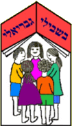
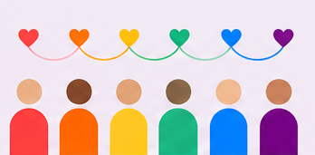

<meta charset="utf-8">
<title>חוברת ועד הורים גבריאלי</title>
<meta name="viewport" content="width=device-width, initial-scale=1">
<script src="./vendor/react.js"></script>
<script src="./vendor/react-dom.js"></script>
<script src="./support.js"></script>
<script>
(function () {
  var root = document.documentElement, busy = false, last = '';
  function fitPage() {
    busy = false;
    var stage = document.querySelector('.stage'), fit = stage && stage.querySelector('.fit');
    if (!fit) return;
    var cw = stage.clientWidth - 24, ch = stage.clientHeight - 14;
    if (cw <= 0 || ch <= 0) return;
    var desk = cw > 700;
    function search(tight) {
      fit.classList.toggle('tight', tight);
      var r = null;
      for (var i = 0; i <= 35; i++) {
        var sc = 1 - i * 0.02;
        var w = !desk ? cw / sc : (sc >= 1 ? Math.min(cw, 640) : Math.min(cw / sc, 880));
        root.style.setProperty('--fw', w + 'px');
        root.style.setProperty('--fs', '1');
        var h = fit.offsetHeight;
        r = { s: sc, w: w, h: h, t: tight };
        if (h * sc <= ch) break;
      }
      return r;
    }
    var best = search(false);
    if (best.s < 0.62) {
      var alt = search(true);
      if (alt.s > best.s) best = alt;
    }
    fit.classList.toggle('tight', !!best.t);
    root.style.setProperty('--fw', best.w + 'px');
    var key = [best.s.toFixed(2), Math.round(best.w), Math.round(best.h), ch].join();
    root.style.setProperty('--fs', best.s);
    root.style.setProperty('--ft', Math.max(0, (ch - best.h * best.s) / 2) + 'px');
    last = key;
  }
  function schedule() { if (!busy) { busy = true; requestAnimationFrame(fitPage); } }
  window.addEventListener('resize', schedule);
  window.addEventListener('orientationchange', schedule);
  if (document.fonts && document.fonts.ready) document.fonts.ready.then(schedule);
  window.addEventListener('load', schedule);
  new MutationObserver(schedule).observe(document.documentElement, { childList: true, subtree: true, characterData: true });
  document.addEventListener('load', schedule, true);
})();
</script>
<x-dc>
<helmet>
<link rel="preconnect" href="https://fonts.googleapis.com">
<link rel="preconnect" href="https://fonts.gstatic.com" crossorigin="anonymous">
<link rel="stylesheet" href="https://fonts.googleapis.com/css2?family=Rubik:wght@400;500;600;700;800&amp;family=Noto+Sans+Ethiopic:wght@400;600;700;800&amp;display=swap">
<style>
body{margin:0;background:#F6F0E4}
a{color:#0067C7}a:hover{color:#004C94}
button{font:inherit}
button:focus-visible,a:focus-visible{outline:3px solid #0067C7;outline-offset:3px}
button:disabled{opacity:.35;cursor:default}
.page{transform-origin:right center;will-change:transform}
.page.ltr{transform-origin:left center}
.page.rtl{--s:1}
.page.ltr{--s:-1}
.page.fwdA{animation:fwdA .6s cubic-bezier(.2,.7,.25,1)}
.page.fwdB{animation:fwdB .6s cubic-bezier(.2,.7,.25,1)}
.page.backA{animation:backA .6s cubic-bezier(.2,.7,.25,1)}
.page.backB{animation:backB .6s cubic-bezier(.2,.7,.25,1)}
@keyframes fwdA{from{transform:rotateY(calc(var(--s) * -80deg));opacity:.15}to{transform:none;opacity:1}}
@keyframes fwdB{from{transform:rotateY(calc(var(--s) * -80deg));opacity:.15}to{transform:none;opacity:1}}
@keyframes backA{from{transform:rotateY(calc(var(--s) * 80deg));opacity:.15}to{transform:none;opacity:1}}
@keyframes backB{from{transform:rotateY(calc(var(--s) * 80deg));opacity:.15}to{transform:none;opacity:1}}
@media (prefers-reduced-motion: reduce){.page{animation:none !important}}
.app[dir="rtl"] .mir{transform:scaleX(-1)}
.pg{padding:40px 44px 28px}
html,body{height:100%;overflow:hidden}
.app{height:100vh;height:100dvh;min-height:0 !important;display:flex;flex-direction:column;overflow:hidden;padding-bottom:max(0px,env(safe-area-inset-bottom,0px)) !important}
.hdr{flex:none;width:100%}
.stage{flex:1 1 0;min-height:0;position:relative;overflow:hidden;width:100%;box-sizing:border-box;padding:0 12px}
.fit{position:absolute;top:var(--ft,0px);left:50%;width:var(--fw,640px);margin-left:calc(var(--fw,640px) / -2);transform:scale(var(--fs,1));transform-origin:top center}
.bar{flex:none}
.fit.tight .pg{padding:18px 18px 12px}
.fit.tight .pg img{max-height:150px;width:auto !important;max-width:100% !important;margin-left:auto;margin-right:auto}
.fit.tight .pg>div,.fit.tight .pg>div>div{gap:12px !important}
@media (max-width:560px){.hdr{margin-bottom:8px !important;gap:8px !important}.hdr img{height:30px !important}.hdr .ttl{font-size:14px !important}.hdr button{min-height:36px !important;padding:0 12px !important;font-size:14px !important}.bar{padding:8px 0 10px !important;margin-top:6px !important}.bar button{min-height:44px !important}}
.g2{display:grid;grid-template-columns:repeat(2,minmax(0,1fr));gap:10px}
@media (max-width:560px){.pg{padding:26px 18px 20px}.g2{grid-template-columns:minmax(0,1fr)}}
</style>
</helmet>
<div class="app" dir="{{dir}}" lang="{{lang}}" style="box-sizing: border-box; padding: 14px 16px 0; background: #F6F0E4; color: #2A1B3D; font-family: {{font}}; line-height: 1.5">

<header class="hdr" ref="{{setTop}}" style="max-width: 980px; margin: 0 auto 12px; display: flex; flex-wrap: wrap; gap: 12px; align-items: center; justify-content: space-between">
<div style="display: flex; align-items: center; gap: 10px">

<div class="ttl" style="font-weight: 700; font-size: 17px">{{t.bookTitle}}</div>
</div>
<div role="group" aria-label="{{t.chooseLang}}" style="display: flex; flex-wrap: wrap; gap: 4px; background: #FFFFFF; padding: 4px; border-radius: 999px; border: 1px solid #E4D8C3">
<sc-for list="{{langs}}" as="l" hint-placeholder-count="4">
<button type="button" lang="{{l.code}}" aria-pressed="{{l.pressed}}" onClick="{{l.pick}}" style="min-height: 44px; padding: 0 16px; border-radius: 999px; border: 0; font-weight: 600; font-size: 15px; cursor: pointer; background: {{l.bg}}; color: {{l.fg}}">{{l.label}}</button>
</sc-for>
</div>
</header>

<main class="stage" style="perspective: 2200px">
<div class="fit">
<div class="page {{pageClass}}" onTouchStart="{{onTS}}" onTouchEnd="{{onTE}}" style="position: relative; background: #FFFDF8; border-radius: {{pageRadius}}; box-shadow: {{pageShadow}}">
<sc-if value="{{isRtl}}" hint-placeholder-val="{{ true }}">
<div aria-hidden="true" style="position: absolute; top: 0; bottom: 0; right: 0; width: 30px; border-radius: 0 6px 6px 0; background: linear-gradient(to left, rgba(42,27,61,0.10), rgba(42,27,61,0))"></div>
</sc-if>
<sc-if value="{{isLtr}}" hint-placeholder-val="{{ false }}">
<div aria-hidden="true" style="position: absolute; top: 0; bottom: 0; left: 0; width: 30px; border-radius: 6px 0 0 6px; background: linear-gradient(to right, rgba(42,27,61,0.10), rgba(42,27,61,0))"></div>
</sc-if>

<div class="pg" style="position: relative; display: flex; flex-direction: column; box-sizing: border-box">

<sc-if value="{{p.hasHeader}}" hint-placeholder-val="{{ true }}">
<div style="display: flex; flex-wrap: wrap; align-items: center; gap: 18px; margin-bottom: 24px">
<div style="flex: 1 1 260px; min-width: 0; display: flex; flex-direction: column; gap: 8px">
<div style="display: flex; align-items: center; gap: 8px; font-size: 15px; font-weight: 600; color: {{p.color}}">
<span aria-hidden="true" style="width: 10px; height: 10px; border-radius: 50%; background: {{p.color}}"></span>
<span>{{p.kicker}}</span>
</div>
<h2 style="margin: 0; font-size: clamp(28px, 6vw, 40px); line-height: 1.12; font-weight: 800; color: #2A1B3D">{{p.title}}</h2>
<svg aria-hidden="true" width="92" height="12" viewBox="0 0 92 12"><circle cx="6" cy="6" r="5" fill="#FF4141"></circle><circle cx="22" cy="6" r="5" fill="#FB6100"></circle><circle cx="38" cy="6" r="5" fill="#FFC200"></circle><circle cx="54" cy="6" r="5" fill="#24BE82"></circle><circle cx="70" cy="6" r="5" fill="#0082FB"></circle><circle cx="86" cy="6" r="5" fill="#820082"></circle></svg>
<sc-if value="{{p.hasIntro}}" hint-placeholder-val="{{ false }}">
<p style="margin: 6px 0 0; font-size: 17px; line-height: 1.55; color: #3D2E50">{{p.intro}}</p>
</sc-if>
</div>
<sc-if value="{{p.hasArt}}" hint-placeholder-val="{{ true }}">

</sc-if>
</div>
</sc-if>

<sc-if value="{{p.isCover}}" hint-placeholder-val="{{ true }}">
<div style="display: flex; flex-direction: column; gap: 22px">
<div style="display: flex; justify-content: space-between; align-items: center; gap: 16px">


</div>
<div>
<div style="font-size: 19px; font-weight: 600">{{c.kicker}}</div>
<div style="font-size: clamp(50px, 12vw, 80px); font-weight: 800; line-height: 1; color: #C8262B">{{c.school}}</div>
</div>
<div style="background: #FFF1D6; border-radius: 24px; padding: 14px 10px 0; overflow: hidden">
<svg aria-hidden="true" viewBox="0 0 400 210" style="display: block; width: 100%; height: auto">
<circle cx="58" cy="46" r="22" fill="#FFC200"></circle>
<path d="M58 12v-8M58 88v-8M24 46h-8M100 46h-8M34 22l-6-6M88 76l-6-6M34 70l-6 6M88 16l-6 6" stroke="#FFC200" stroke-width="4" stroke-linecap="round"></path>
<path d="M300 40c0-9 8-15 17-13 3-8 15-10 21-3 9-2 16 5 14 13 7 1 10 9 4 13h-52c-6 0-8-6-4-10z" fill="#FFFFFF"></path>
<rect x="0" y="186" width="400" height="24" fill="#BFE8D3"></rect>
<path d="M120 100L200 40l80 60z" fill="#FF4141" stroke="#2A1B3D" stroke-width="3" stroke-linejoin="round"></path>
<rect x="132" y="100" width="136" height="88" fill="#FFFDF8" stroke="#2A1B3D" stroke-width="3"></rect>
<circle cx="200" cy="76" r="9" fill="#FFFDF8" stroke="#2A1B3D" stroke-width="3"></circle>
<rect x="146" y="114" width="28" height="24" rx="3" fill="#24BE82" stroke="#2A1B3D" stroke-width="3"></rect>
<rect x="226" y="114" width="28" height="24" rx="3" fill="#0082FB" stroke="#2A1B3D" stroke-width="3"></rect>
<path d="M186 188v-34a14 14 0 0 1 28 0v34z" fill="#FB6100" stroke="#2A1B3D" stroke-width="3"></path>
<path d="M76 168h40M284 168h40" stroke="#2A1B3D" stroke-width="3" stroke-linecap="round"></path>
<circle cx="62" cy="134" r="11" fill="#D9A273"></circle><path d="M46 188v-30a16 16 0 0 1 32 0v30z" fill="#820082"></path>
<circle cx="102" cy="138" r="10" fill="#F3C9A3"></circle><path d="M88 188v-26a14 14 0 0 1 28 0v26z" fill="#24BE82"></path>
<circle cx="298" cy="138" r="10" fill="#A86B45"></circle><path d="M284 188v-26a14 14 0 0 1 28 0v26z" fill="#0082FB"></path>
<circle cx="338" cy="134" r="11" fill="#F3C9A3"></circle><path d="M322 188v-30a16 16 0 0 1 32 0v30z" fill="#FB6100"></path>
<path d="M18 186c0-14 6-26 14-26s14 12 14 26zM372 186c0-14 6-26 14-26s14 12 14 26z" fill="#24BE82"></path>
</svg>
</div>
<div>
<h1 style="margin: 0; font-size: clamp(26px, 5.6vw, 36px); line-height: 1.18; font-weight: 800; color: #820082">{{c.title}}</h1>
<p style="margin: 10px 0 0; font-size: 19px; font-weight: 600">{{c.year}}</p>
<p style="margin: 2px 0 0; font-size: 16px; color: #5A4A6B">{{c.date}}</p>
</div>
<div style="border-top: 2px dashed #E4D8C3; padding-top: 20px; display: flex; flex-direction: column; gap: 12px">
<div style="font-weight: 700; font-size: 17px; display: flex; align-items: center; gap: 8px">
<svg aria-hidden="true" width="22" height="22" viewBox="0 0 24 24" fill="none" stroke="#0067C7" stroke-width="2" stroke-linecap="round" stroke-linejoin="round"><path d="M3 12a9 9 0 1 0 18 0a9 9 0 1 0 -18 0M3 12h18M12 3c2.5 2.5 3.8 5.5 3.8 9s-1.3 6.5-3.8 9c-2.5-2.5-3.8-5.5-3.8-9S9.5 5.5 12 3z"></path></svg>
<span>{{t.chooseLang}}</span>
</div>
<div style="display: grid; grid-template-columns: repeat(2, minmax(0, 1fr)); gap: 10px">
<sc-for list="{{langs}}" as="l" hint-placeholder-count="4">
<button type="button" lang="{{l.code}}" aria-pressed="{{l.pressed}}" onClick="{{l.pick}}" style="min-height: 52px; border-radius: 14px; border: 2px solid {{l.border}}; background: {{l.bg}}; color: {{l.fg}}; font-weight: 700; font-size: 18px; cursor: pointer">{{l.label}}</button>
</sc-for>
</div>
<button type="button" onClick="{{next}}" style="margin-top: 6px; min-height: 56px; border-radius: 999px; border: 0; background: #C8262B; color: #FFFFFF; font-weight: 700; font-size: 19px; cursor: pointer; display: flex; align-items: center; justify-content: center; gap: 10px">
<span>{{t.open}}</span>
<svg class="mir" aria-hidden="true" width="22" height="22" viewBox="0 0 24 24" fill="none" stroke="#FFFFFF" stroke-width="2.4" stroke-linecap="round" stroke-linejoin="round"><path d="M5 12h14M13 6l6 6-6 6"></path></svg>
</button>
<p style="margin: 0; text-align: center; font-size: 14px; color: #5A4A6B">{{t.swipe}}</p>
</div>
</div>
</sc-if>

<sc-if value="{{p.isWelcome}}" hint-placeholder-val="{{ false }}">
<div style="display: flex; flex-direction: column; gap: 24px">
<div style="position: relative; background: #F7E6F7; border-radius: 22px; padding: 26px 24px 22px">
<svg aria-hidden="true" width="40" height="32" viewBox="0 0 40 32" style="display: block; margin-bottom: 8px"><path d="M2 30V18C2 8 8 2 17 1v6c-5 1-8 5-8 10h8v13zM23 30V18c0-10 6-16 15-17v6c-5 1-8 5-8 10h8v13z" fill="#820082"></path></svg>
<p style="margin: 0; font-size: 21px; line-height: 1.45; font-weight: 600">{{w.lead}}</p>
<p style="margin: 12px 0 0; font-size: 18px; line-height: 1.6">{{w.body}}</p>
<p style="margin: 16px 0 0; font-size: 16px; font-weight: 700; color: #820082">{{w.sign}}</p>
</div>
<div>
<h3 style="margin: 0 0 12px; font-size: 20px; font-weight: 700">{{w.statsTitle}}</h3>
<div style="display: grid; grid-template-columns: repeat(3, minmax(0, 1fr)); gap: 10px">
<sc-for list="{{w.stats}}" as="s" hint-placeholder-count="3">
<div style="background: {{s.bg}}; color: #FFFFFF; border-radius: 18px; padding: 16px 12px; display: flex; flex-direction: column; gap: 4px; min-height: 120px; box-sizing: border-box">
<svg aria-hidden="true" width="26" height="26" viewBox="0 0 24 24" fill="none" stroke="#FFFFFF" stroke-width="2" stroke-linecap="round" stroke-linejoin="round"><path d="{{s.d}}"></path></svg>
<div style="font-size: clamp(32px, 7vw, 44px); font-weight: 800; line-height: 1">{{s.n}}</div>
<div style="font-size: 14px; line-height: 1.35; font-weight: 500">{{s.label}}</div>
</div>
</sc-for>
</div>
</div>
</div>
</sc-if>

<sc-if value="{{p.isClasses}}" hint-placeholder-val="{{ false }}">
<div style="display: grid; grid-template-columns: repeat(2, minmax(0, 1fr)); gap: 12px">
<sc-for list="{{p.items}}" as="k" hint-placeholder-count="6">
<div style="background: {{k.tint}}; border-radius: 18px; padding: 16px; display: flex; flex-direction: column; gap: 10px">
<div style="display: flex; align-items: center; gap: 10px">
<span style="flex: none; width: 52px; height: 52px; border-radius: 50%; background: {{k.color}}; color: {{k.fg}}; display: flex; align-items: center; justify-content: center; font-size: 24px; font-weight: 800">{{k.badge}}</span>
<span style="font-size: 18px; font-weight: 700; line-height: 1.25">{{k.label}}</span>
</div>
<div style="display: flex; align-items: center; gap: 6px; font-size: 16px; font-weight: 600">
<svg aria-hidden="true" width="20" height="20" viewBox="0 0 24 24" fill="none" stroke="#2A1B3D" stroke-width="2" stroke-linecap="round" stroke-linejoin="round"><path d="{{k.d}}"></path></svg>
<span>{{k.count}} {{k.studentsWord}}</span>
</div>
<div>
<div style="font-size: 13px; color: #5A4A6B">{{k.teacherLabel}}</div>
<div style="font-size: 16px; font-weight: 600; line-height: 1.3">{{k.name}}</div>
</div>
</div>
</sc-for>
</div>
</sc-if>

<sc-if value="{{p.isDay}}" hint-placeholder-val="{{ false }}">
<div style="display: flex; flex-direction: column; gap: 14px">
<sc-for list="{{p.rows}}" as="r" hint-placeholder-count="3">
<div style="background: #FFEBDC; border-radius: 18px; padding: 16px 18px; display: flex; flex-wrap: wrap; align-items: center; gap: 8px 18px">
<div style="flex: 1 1 160px">
<div style="font-size: 13px; color: #5A4A6B">{{p.daysLabel}}</div>
<div style="font-size: 19px; font-weight: 700">{{r.days}}</div>
</div>
<div style="flex: 0 0 auto">
<div style="font-size: 13px; color: #5A4A6B">{{p.hoursLabel}}</div>
<div dir="ltr" style="font-size: 24px; font-weight: 800; color: #B54400">{{r.hours}}</div>
</div>
<sc-if value="{{r.hasNote}}" hint-placeholder-val="{{ false }}">
<div style="flex: 1 1 100%; display: flex; align-items: center; gap: 8px; font-size: 15px; font-weight: 600">
<svg aria-hidden="true" width="20" height="20" viewBox="0 0 24 24" fill="none" stroke="#B54400" stroke-width="2" stroke-linecap="round" stroke-linejoin="round"><path d="M6 3v8a2 2 0 0 0 2 2v8M10 3v8a2 2 0 0 1-2 2M8 3v6M17 21V3c-2 1.5-3 4-3 7v4h3"></path></svg>
<span>{{r.note}}</span>
</div>
</sc-if>
</div>
</sc-for>
<div style="display: flex; flex-direction: column; gap: 10px; margin-top: 8px">
<sc-for list="{{p.items}}" as="it" hint-placeholder-count="3">
<div style="display: flex; gap: 14px; align-items: flex-start">
<span style="flex: none; width: 44px; height: 44px; border-radius: 50%; background: #B54400; display: flex; align-items: center; justify-content: center">
<svg aria-hidden="true" width="22" height="22" viewBox="0 0 24 24" fill="none" stroke="#FFFFFF" stroke-width="2" stroke-linecap="round" stroke-linejoin="round"><path d="{{it.d}}"></path></svg>
</span>
<p style="margin: 0; padding-top: 9px; font-size: 16px; line-height: 1.55">{{it.text}}</p>
</div>
</sc-for>
</div>
</div>
</sc-if>

<sc-if value="{{p.isList}}" hint-placeholder-val="{{ false }}">
<sc-if value="{{p.hasChips}}" hint-placeholder-val="{{ false }}">
<div style="display: flex; flex-wrap: wrap; gap: 8px; margin-bottom: 16px">
<sc-for list="{{p.chips}}" as="ch" hint-placeholder-count="3">
<span style="padding: 8px 16px; border-radius: 999px; background: {{ch.bg}}; color: #FFFFFF; font-weight: 700; font-size: 15px">{{ch.label}}</span>
</sc-for>
</div>
</sc-if>
<div class="{{p.listClass}}" style="display: flex; flex-direction: column; gap: 10px">
<sc-for list="{{p.items}}" as="it" hint-placeholder-count="5">
<div style="display: flex; gap: 14px; align-items: flex-start; padding: 14px 16px; background: {{p.tint}}; border-radius: 16px">
<span style="flex: none; width: 44px; height: 44px; border-radius: 50%; background: {{p.color}}; display: flex; align-items: center; justify-content: center">
<svg aria-hidden="true" width="22" height="22" viewBox="0 0 24 24" fill="none" stroke="#FFFFFF" stroke-width="2" stroke-linecap="round" stroke-linejoin="round"><path d="{{it.d}}"></path></svg>
</span>
<div style="min-width: 0">
<div style="font-size: 17px; font-weight: 700; line-height: 1.3">{{it.name}}</div>
<div style="margin-top: 3px; font-size: 15px; line-height: 1.5; color: #3D2E50">{{it.desc}}</div>
</div>
</div>
</sc-for>
</div>
</sc-if>

<sc-if value="{{p.isContact}}" hint-placeholder-val="{{ false }}">
<div style="display: flex; flex-direction: column; gap: 16px">
<div style="background: #E2EFFC; border-radius: 22px; padding: 22px; display: flex; flex-direction: column; gap: 12px">
<div style="display: flex; align-items: center; gap: 12px">
<span style="flex: none; width: 48px; height: 48px; border-radius: 50%; background: #0067C7; display: flex; align-items: center; justify-content: center">
<svg aria-hidden="true" width="24" height="24" viewBox="0 0 24 24" fill="none" stroke="#FFFFFF" stroke-width="2" stroke-linecap="round" stroke-linejoin="round"><path d="M15.5 5a2.5 2.5 0 1 0 5 0a2.5 2.5 0 1 0 -5 0M3.5 12a2.5 2.5 0 1 0 5 0a2.5 2.5 0 1 0 -5 0M15.5 19a2.5 2.5 0 1 0 5 0a2.5 2.5 0 1 0 -5 0M8.2 10.8l7.6-4.5M8.2 13.2l7.6 4.5"></path></svg>
</span>
<h3 style="margin: 0; font-size: 21px; font-weight: 700; line-height: 1.25">{{ct.fbTitle}}</h3>
</div>
<p style="margin: 0; font-size: 16px; line-height: 1.6">{{ct.fbBody}}</p>
<a href="https://www.facebook.com/profile.php?id=61580219257862" target="_blank" rel="noopener noreferrer" style="align-self: flex-start; min-height: 48px; padding: 0 22px; border-radius: 999px; background: #0067C7; color: #FFFFFF; font-weight: 700; font-size: 16px; text-decoration: none; display: inline-flex; align-items: center; gap: 8px">
<span>{{ct.fbCta}}</span>
<svg aria-hidden="true" width="18" height="18" viewBox="0 0 24 24" fill="none" stroke="#FFFFFF" stroke-width="2.2" stroke-linecap="round" stroke-linejoin="round"><path d="M14 4h6v6M20 4l-9 9M18 14v5a1 1 0 0 1-1 1H5a1 1 0 0 1-1-1V7a1 1 0 0 1 1-1h5"></path></svg>
</a>
</div>
<div style="background: #FFEBDC; border-radius: 22px; padding: 22px; display: flex; flex-direction: column; gap: 12px">
<div style="display: flex; align-items: center; gap: 12px">
<span style="flex: none; width: 48px; height: 48px; border-radius: 50%; background: #B54400; display: flex; align-items: center; justify-content: center">
<svg aria-hidden="true" width="24" height="24" viewBox="0 0 24 24" fill="none" stroke="#FFFFFF" stroke-width="2" stroke-linecap="round" stroke-linejoin="round"><path d="M19 7V5a1 1 0 0 0-1-1H5a2 2 0 0 0 0 4h14a1 1 0 0 1 1 1v10a1 1 0 0 1-1 1H5a2 2 0 0 1-2-2V6M16.5 13.5h.01"></path></svg>
</span>
<h3 style="margin: 0; font-size: 21px; font-weight: 700; line-height: 1.25">{{ct.payTitle}}</h3>
</div>
<p style="margin: 0; font-size: 16px; line-height: 1.6">{{ct.payBody}}</p>
</div>
</div>
</sc-if>

<sc-if value="{{p.isClosing}}" hint-placeholder-val="{{ false }}">
<div style="display: flex; flex-direction: column; gap: 26px; padding-top: 10px">
<div style="display: flex; justify-content: space-between; align-items: center; gap: 16px">


</div>

<div style="display: grid; grid-template-columns: repeat(2, minmax(0, 1fr)); gap: 12px">


</div>
<h2 style="margin: 0; font-size: clamp(28px, 6.4vw, 42px); line-height: 1.15; font-weight: 800; color: #820082">{{cl.wish}}</h2>
<div>
<div style="font-size: 22px; font-weight: 700">{{cl.name}}</div>
<div style="font-size: 17px; color: #5A4A6B">{{cl.role}}</div>
</div>
<button type="button" onClick="{{toStart}}" style="align-self: flex-start; min-height: 50px; padding: 0 22px; border-radius: 999px; border: 2px solid #820082; background: #FFFFFF; color: #820082; font-weight: 700; font-size: 16px; cursor: pointer; display: inline-flex; align-items: center; gap: 8px">
<svg aria-hidden="true" width="20" height="20" viewBox="0 0 24 24" fill="none" stroke="#820082" stroke-width="2.2" stroke-linecap="round" stroke-linejoin="round"><path d="M3 12a9 9 0 1 0 3-6.7L3 8M3 3v5h5"></path></svg>
<span>{{t.back}}</span>
</button>
</div>
</sc-if>

<sc-if value="{{p.hasArt2}}" hint-placeholder-val="{{ false }}">

</sc-if>
<sc-if value="{{p.hasHeader}}" hint-placeholder-val="{{ true }}">
<div style="margin-top: auto; padding-top: 26px; display: flex; justify-content: space-between; align-items: center; gap: 12px; font-size: 13px; color: #6B5B7B">
<span>{{t.footer}}</span>
<span dir="ltr" style="font-weight: 600">{{pageNo}} / {{total}}</span>
</div>
</sc-if>
</div>
</div>
</div>
</main>

<nav class="bar" aria-label="{{t.navLabel}}" style="margin-top: 10px; padding: 10px 0 14px; background: #F6F0E4">
<div style="max-width: 640px; margin: 0 auto; display: flex; align-items: center; justify-content: space-between; gap: 12px">
<button type="button" onClick="{{prev}}" disabled="{{atStart}}" style="min-height: 48px; min-width: 48px; padding: 0 18px; border-radius: 999px; border: 2px solid #2A1B3D; background: #FFFFFF; color: #2A1B3D; font-weight: 700; font-size: 16px; cursor: pointer; display: inline-flex; align-items: center; gap: 8px">
<svg class="mir" aria-hidden="true" width="20" height="20" viewBox="0 0 24 24" fill="none" stroke="#2A1B3D" stroke-width="2.4" stroke-linecap="round" stroke-linejoin="round"><path d="M19 12H5M11 6l-6 6 6 6"></path></svg>
<span>{{t.prev}}</span>
</button>
<div style="display: flex; flex-direction: column; align-items: center; gap: 6px; min-width: 0">
<div aria-hidden="true" style="display: flex; flex-wrap: wrap; justify-content: center; gap: 4px; max-width: 220px">
<sc-for list="{{dots}}" as="d" hint-placeholder-count="15">
<span style="height: 7px; border-radius: 999px; width: {{d.w}}; background: {{d.bg}}"></span>
</sc-for>
</div>
<div style="font-size: 13px; color: #5A4A6B"><span>{{t.page}}</span> <span dir="ltr">{{pageNo}} / {{total}}</span></div>
</div>
<button type="button" onClick="{{next}}" disabled="{{atEnd}}" style="min-height: 48px; min-width: 48px; padding: 0 18px; border-radius: 999px; border: 0; background: #C8262B; color: #FFFFFF; font-weight: 700; font-size: 16px; cursor: pointer; display: inline-flex; align-items: center; gap: 8px">
<span>{{t.next}}</span>
<svg class="mir" aria-hidden="true" width="20" height="20" viewBox="0 0 24 24" fill="none" stroke="#FFFFFF" stroke-width="2.4" stroke-linecap="round" stroke-linejoin="round"><path d="M5 12h14M13 6l6 6-6 6"></path></svg>
</button>
</div>
</nav>
</div>
</x-dc>
<script type="text/x-dc" data-dc-script data-props='{"$preview":{"width":1280,"height":1180}}'>
class Component extends DCLogic {
  data() {
    if (this._d) return this._d;
    const c = (x, y, r) => 'M' + (x - r) + ' ' + y + 'a' + r + ' ' + r + ' 0 1 0 ' + (2 * r) + ' 0a' + r + ' ' + r + ' 0 1 0 -' + (2 * r) + ' 0';
    const I = {
      users: c(9, 8, 3.5) + 'M2.5 20c0-3.6 2.9-6 6.5-6s6.5 2.4 6.5 6' + c(17, 9, 2.5) + 'M16.5 14.2c2.9.2 5 2.3 5 5.3',
      school: 'M3 21h18M5 21V10l7-5 7 5v11M10 21v-5h4v5' + c(12, 11, 1.6),
      layers: 'M12 3 2.5 8 12 13l9.5-5zM2.5 12.5l9.5 5 9.5-5M2.5 16.5l9.5 5 9.5-5',
      heart: 'M12 20s-7.5-4.6-7.5-10A4.3 4.3 0 0 1 12 7.3A4.3 4.3 0 0 1 19.5 10c0 5.4-7.5 10-7.5 10z',
      smile: c(12, 12, 9) + 'M8.5 14.5c1.9 2 5.1 2 7 0M9 9.5h.01M15 9.5h.01',
      puzzle: 'M4 8h4a2 2 0 1 1 4 0h4v4a2 2 0 1 1 0 4v4H4v-4a2 2 0 1 0 0-4z',
      flask: 'M9 3h6M10 3v6l-5.5 10a1.5 1.5 0 0 0 1.3 2h12.4a1.5 1.5 0 0 0 1.3-2L14 9V3M7 15h10',
      globe: c(12, 12, 9) + 'M3 12h18M12 3c2.5 2.5 3.8 5.5 3.8 9s-1.3 6.5-3.8 9c-2.5-2.5-3.8-5.5-3.8-9S9.5 5.5 12 3z',
      ball: c(12, 12, 9) + 'M12 7l4 3-1.5 4.5h-5L8 10zM12 3v4M16 10l4.5-1.5M14.5 14.5 17 19M9.5 14.5 7 19M8 10 3.5 8.5',
      calc: 'M7 2.5h10a2 2 0 0 1 2 2v15a2 2 0 0 1-2 2H7a2 2 0 0 1-2-2v-15a2 2 0 0 1 2-2zM8 6.5h8v3H8zM8.5 13h.01M12 13h.01M15.5 13h.01M8.5 17h.01M12 17h.01M15.5 17h.01',
      laptop: 'M5.5 4.5h13a1.5 1.5 0 0 1 1.5 1.5v9.5H4V6a1.5 1.5 0 0 1 1.5-1.5zM2 19.5h20',
      door: 'M5 21V4a1 1 0 0 1 1-1h12a1 1 0 0 1 1 1v17M3 21h18M15 12h.01',
      eye: 'M2 12s3.6-7 10-7 10 7 10 7-3.6 7-10 7S2 12 2 12z' + c(12, 12, 3),
      home: 'M3 10.5 12 3l9 7.5M5 9v12h14V9M9.5 21v-6h5v6',
      sprout: 'M12 21v-9M12 12C12 8 9 5.5 5 5.5c0 4 3 6.5 7 6.5zM12 14c0-3.5 2.5-6 6.5-6 0 3.5-2.5 6-6.5 6zM7 21h10',
      leaf: 'M5 20c0-9 5.5-15 15-15 0 9.5-6 15-14 15zM5 20l8-8',
      trend: 'M3 17l6-6 4 4 8-8M15 7h6v6',
      chat: 'M4 5h16v11H9l-5 4zM8 9.5h8M8 12.5h5',
      star: 'M12 3l2.7 5.6 6.1.8-4.5 4.2 1.1 6.1L12 16.8l-5.4 2.9 1.1-6.1-4.5-4.2 6.1-.8z',
      plusminus: 'M6 3h12a3 3 0 0 1 3 3v12a3 3 0 0 1-3 3H6a3 3 0 0 1-3-3V6a3 3 0 0 1 3-3zM7.5 8.5h4M9.5 6.5v4M13 8.5h4M7.5 14l3 3M10.5 14l-3 3M13 15.5h4',
      music: 'M9 18V5l11-2v13' + c(6.5, 18, 2.5) + c(17.5, 16, 2.5),
      shield: 'M12 3 4.5 6v5.5c0 4.8 3.2 8.2 7.5 9.5 4.3-1.3 7.5-4.7 7.5-9.5V6zM9 12l2 2 4-4',
      robot: 'M7 8h10a2.5 2.5 0 0 1 2.5 2.5v6a2.5 2.5 0 0 1-2.5 2.5H7a2.5 2.5 0 0 1-2.5-2.5v-6A2.5 2.5 0 0 1 7 8zM12 8V4.5M12 4h.01M9 12.5v1M15 12.5v1M9.5 16h5M2.5 12.5v2.5M21.5 12.5v2.5',
      drop: 'M12 3s6.5 7 6.5 11.5a6.5 6.5 0 0 1-13 0C5.5 10 12 3 12 3zM9 15a3 3 0 0 0 3 3',
      anchor: c(12, 5, 2) + 'M12 7v14M8 10.5h8M4 13a8 8 0 0 0 16 0',
      search: c(10.5, 10.5, 6.5) + 'M15.5 15.5l5 5',
      paw: c(7, 9, 1.8) + c(10.5, 5.5, 1.8) + c(15, 6, 1.8) + c(18.5, 10, 1.8) + 'M8 17.5c0-3 2.2-6 4.8-6s4.7 3 4.7 5.6c0 2-1.4 3.4-3.2 3.4-1.1 0-1.7-.6-2.3-.6s-1.3.6-2.4.6C8.9 20.5 8 19.3 8 17.5z',
      tennis: c(12, 12, 9) + 'M5.5 5.8c3.4 3.3 3.4 9.1 0 12.4M18.5 5.8c-3.4 3.3-3.4 9.1 0 12.4',
      calendar: 'M5.5 5h13a2 2 0 0 1 2 2v11.5a2 2 0 0 1-2 2h-13a2 2 0 0 1-2-2V7a2 2 0 0 1 2-2zM3.5 10h17M8 3v4M16 3v4M8 14h.01M12 14h.01M16 14h.01M8 17h.01M12 17h.01',
      plane: 'M21.5 2.5l-19 8 7 2.5 2.5 7zM21.5 2.5l-12 10.5',
      family: c(7, 6, 2.3) + c(17, 6, 2.3) + c(12, 12.5, 1.8) + 'M3.5 20v-6a3.5 3.5 0 0 1 7 0M13.5 14a3.5 3.5 0 0 1 7 0v6M9.5 20v-2a2.5 2.5 0 0 1 5 0v2',
      mic: 'M12 2.5a3 3 0 0 1 3 3v5a3 3 0 0 1-6 0v-5a3 3 0 0 1 3-3zM5.5 11a6.5 6.5 0 0 0 13 0M12 17.5V21M8.5 21h7',
      moon: 'M20 14.5A8.5 8.5 0 1 1 9.5 4a7 7 0 0 0 10.5 10.5zM17 3.5v3M15.5 5h3',
      pen: 'M16.5 3.5a2.1 2.1 0 0 1 3 3L8 18l-4 1 1-4zM14.5 5.5l3 3',
      cursor: 'M5 3l14 7-6 2-2 6zM13 12l5 5',
      grid: 'M4.5 3.5h5a1 1 0 0 1 1 1v5a1 1 0 0 1-1 1h-5a1 1 0 0 1-1-1v-5a1 1 0 0 1 1-1zM14.5 3.5h5a1 1 0 0 1 1 1v5a1 1 0 0 1-1 1h-5a1 1 0 0 1-1-1v-5a1 1 0 0 1 1-1zM4.5 13.5h5a1 1 0 0 1 1 1v5a1 1 0 0 1-1 1h-5a1 1 0 0 1-1-1v-5a1 1 0 0 1 1-1zM14.5 13.5h5a1 1 0 0 1 1 1v5a1 1 0 0 1-1 1h-5a1 1 0 0 1-1-1v-5a1 1 0 0 1 1-1z',
      code: 'M8 7l-5 5 5 5M16 7l5 5-5 5M13.5 4l-3 16',
      chef: 'M7 15.5V20h10v-4.5M7 15.5a4 4 0 0 1-1.5-7.6A4.5 4.5 0 0 1 12 4.6a4.5 4.5 0 0 1 6.5 3.3A4 4 0 0 1 17 15.5zM7 17.5h10',
      book: 'M12 6.5C10 5 7 4.5 3 4.5v14c4 0 7 .5 9 2 2-1.5 5-2 9-2v-14c-4 0-7 .5-9 2zM12 6.5v14',
      sun: c(12, 12, 4) + 'M12 2v2.5M12 19.5V22M2 12h2.5M19.5 12H22M4.9 4.9l1.8 1.8M17.3 17.3l1.8 1.8M4.9 19.1l1.8-1.8M17.3 6.7l1.8-1.8',
      zap: 'M13 2 4 14h7l-1 8 9-12h-7z',
      activity: 'M2 12h4l3-8 6 16 3-8h4',
      news: 'M5 4h14a2 2 0 0 1 2 2v12a2 2 0 0 1-2 2H5a2 2 0 0 1-2-2V6a2 2 0 0 1 2-2zM7 8h10M7 12h4M7 16h4M14 12h3v4h-3z',
      hands: 'M12 11.5s-3.5-2.2-3.5-4.7A1.9 1.9 0 0 1 12 5.6a1.9 1.9 0 0 1 3.5 1.2c0 2.5-3.5 4.7-3.5 4.7zM2 14l4.5-1.5c1-.3 2 0 2.7.6L11 15h2.5a1.5 1.5 0 0 1 0 3H9M2 20l4-1.5h7l7.5-4a1.6 1.6 0 0 0-1.8-2.6L14 14.5',
      cap: 'M2 9.5 12 5l10 4.5-10 4.5zM6 11.5V16c0 1.5 2.7 3 6 3s6-1.5 6-3v-4.5M22 9.5v5',
      camera: 'M4 7h3l2-3h6l2 3h3a1 1 0 0 1 1 1v11a1 1 0 0 1-1 1H4a1 1 0 0 1-1-1V8a1 1 0 0 1 1-1z' + c(12, 13, 3.5),
      coffee: 'M4 9h13v5a5 5 0 0 1-5 5H9a5 5 0 0 1-5-5zM17 10h1.5a2.5 2.5 0 0 1 0 5H17M8 3v3M12 3v3',
      bag: 'M5 8h14l-1 13H6zM9 10V6a3 3 0 0 1 6 0v4',
      bulb: 'M9 18h6M10 21h4M12 3a6 6 0 0 0-3.5 10.9c.6.5 1 1.2 1 2.1h5c0-.9.4-1.6 1-2.1A6 6 0 0 0 12 3z',
      trophy: 'M8 4h8v6a4 4 0 0 1-8 0zM8 6H4.5v1.5A3.5 3.5 0 0 0 8 11M16 6h3.5v1.5A3.5 3.5 0 0 1 16 11M12 14v4M8 21h8M10 18h4l.5 3h-5z',
      megaphone: 'M3 10v4h3l7 4V6l-7 4zM16 9a4 4 0 0 1 0 6M18.5 6.5a7.5 7.5 0 0 1 0 11',
      museum: 'M3 21h18M4 18h16M6 18v-7M10 18v-7M14 18v-7M18 18v-7M3 11h18L12 4z',
      map: 'M3 6l6-3 6 3 6-3v15l-6 3-6-3-6 3zM9 3v15M15 6v15'
    };
    const STAFF_ICONS = ['heart', 'smile', 'puzzle', 'flask', 'globe', 'ball', 'laptop', 'calc'];
    const DAY_ICONS = ['door', 'eye', 'home'];
    const LIST_ICONS = [
      ['trend', 'chat', 'leaf', 'star', 'plusminus', 'pen', 'moon'],
      ['robot', 'plane', 'laptop', 'cursor', 'grid'],
      ['shield', 'paw', 'music', 'tennis'],
      ['sprout', 'drop', 'anchor', 'search', 'calendar', 'family', 'mic'],
      ['code', 'zap', 'chef', 'paw', 'book', 'sun', 'activity', 'news', 'ball'],
      ['hands', 'music', 'cap', 'calc', 'heart'],
      ['megaphone', 'star', 'camera', 'book', 'trophy'],
      ['mic', 'chat', 'coffee', 'bag', 'bulb'],
      ['museum', 'sprout', 'chef', 'globe', 'map', 'activity', 'star']
    ];

    const C = {};

    C.he = {
      dir: 'rtl', label: 'עברית',
      ui: { bookTitle: 'חוברת ועד ההורים · גבריאלי', chooseLang: 'בחרו שפה', open: 'פתחו את החוברת', swipe: 'אפשר לדפדף בכפתורים או בהחלקה', back: 'חזרה לעמוד הראשון', footer: 'בית הספר הממלכתי ״גבריאלי״ · חיפה', prev: 'הקודם', next: 'הבא', page: 'עמוד', navLabel: 'דפדוף בחוברת', gabAlt: 'הסמל של בית הספר גבריאלי', haifaAlt: 'הסמל של עיריית חיפה' },
      cover: { kicker: 'בית הספר הממלכתי', school: 'גבריאלי', title: 'ישיבת ועד ההורים המרכזי הראשונה', year: 'שנת הלימודים תשפ״ז', date: 'י״ב בחשוון תשפ״ז · 23 באוקטובר 2026' },
      welcome: { kicker: 'פתח דבר', title: 'ברוכים הבאים', lead: 'ברוכים הבאים לישיבת ועד ההורים המרכזי הראשונה שלנו לשנת הלימודים תשפ״ז.', body: 'עם פתיחתה של השנה אני מאחלת לנו שנה של שיתוף פעולה, יצירת קשרים ועשייה חינוכית ברוכה.', sign: 'קארין וקנין, מנהלת בית הספר', statsTitle: 'בית הספר במספרים', stats: ['תלמידים ותלמידות', 'כיתות, מא׳ עד ו׳', 'תכניות פועלות השנה'] },
      classes: { kicker: 'נתונים על בית הספר', title: 'הכיתות והמחנכות', intro: 'השנה לומדים בגבריאלי 85 תלמידים ותלמידות ב-6 כיתות.', teacher: 'מחנכת הכיתה', students: 'תלמידים',
        items: [['א׳', 'כיתה א׳', 'גילה לוי'], ['ב׳', 'כיתה ב׳', 'מור שמחה'], ['ג׳', 'כיתה ג׳', 'עדי ויכטר'], ['ד׳', 'כיתה ד׳', 'איילה סמואל סלצקי'], ['ה׳', 'כיתה ה׳', 'היאם עוויסאת סלאמה'], ['ו׳', 'כיתה ו׳', 'דועאא אבראהים']] },
      staff: { kicker: 'מי אנחנו', title: 'הצוות המקצועי', intro: 'הצוות נמצא כאן למען הילדים והילדות, וזמין עבורכם ההורים לכל עניין, בקשה והתייעצות.',
        items: [['מרים פישביין', 'יועצת בית הספר'], ['צבי שורק', 'פסיכולוג בית הספר'], ['ליאונה בוריקין', 'מורת שילוב ורכזת שפה'], ['איריס שכטר', 'מורה למדעים'], ['דועאא אבראהים', 'מורה לאנגלית בכל הכיתות'], ['רוז דאהר', 'מורה לחינוך גופני בכל הכיתות'], ['מרינה טטרנקו', 'מורה למתמטיקה ורכזת תקשוב'], ['אורלי חן', 'מורה למתמטיקה']] },
      day: { kicker: 'סדר היום', title: 'יום הלימודים', intro: 'בבית ספרנו מתקיים יום לימודים ארוך.', daysLabel: 'ימים', hoursLabel: 'שעות',
        rows: [['א׳, ב׳, ד׳, ה׳', '8:00–14:15', 'כולל ארוחה חמה בבית הספר'], ['ג׳', '8:00–12:50', ''], ['ו׳', '8:00–11:45', '']],
        info: ['שערי בית הספר נפתחים בשעה 7:30.', 'החל מ-7:45 משגיחה על הילדים מורה תורנית, לפי הנחיית משרד החינוך.', 'בבית הספר יש מועדונית לתלמידי כיתות א׳–ד׳. מנהלת המועדונית: מרגריטה דמישב. לכל שאלה על המועדונית פנו אליה.'] },
      lists: [
        { kicker: 'תכניות השנה', title: 'למידה וקידום', items: [
          ['המרכז לקידום למידה', 'הוראה מתקנת לתלמידי כיתות ב׳–ה׳ עם המורה ליאונה, לצמצום פערים.'],
          ['יע״ל · ילדי עולים לומדים', '6 שעות אולפן לתלמידי כיתות א׳–ד׳ עם המורה מרינה, בימים ב׳, ד׳, ה׳ בין 13:00 ל-15:00. כולל ארוחת צהריים חמה.'],
          ['צומחים מחדש', 'שעתיים שבועיות לילדי כיתות ב׳–ג׳ עם המורה עדי, לצמצום פערים.'],
          ['מצוינות במתמטיקה', 'עם המורה אורלי, לילדי כיתות ג׳–ד׳ במחצית הראשונה.'],
          ['תגבור במתמטיקה', '9 שעות שבועיות לכיתות ד׳, ה׳, ו׳ עם המורה עמי · 3 שעות לכל כיתה.'],
          ['הדרכה בחינוך הלשוני', 'טלי אשל, מדריכת שפה, נכנסת לכיתות א׳, ב׳, ד׳, מדגימה שיעורים ועובדת יחד עם הילדים.'],
          ['ספריית פיג׳מה', 'לכיתות א׳–ב׳: הילדים יקבלו 4 ספרי קריאה לאורך השנה.']] },
        { kicker: 'תכניות השנה', title: 'למידה דיגיטלית וחדשנות', items: [
          ['רובוטיקה', 'שיעורים כיתתיים לתלמידי א׳–ו׳ עם המדריכה עלמה.'],
          ['לומדים לעוף', 'תכנית לימודים של 8 שיעורים סינכרוניים בכיתות ד׳, ה׳, ו׳.'],
          ['סייף סקול', 'מערכת עשירה בתכנים לימודיים לאורך כל השנה. לכל הכיתות יש גישה למערכת.'],
          ['אתרים לימודיים · גלים וסנונית', 'אתרים ובהם פעילויות לתרגול החומר הלימודי במגוון תחומי הדעת.'],
          ['דינמיקלאס', 'מערכת לתרגול הנושאים הלימודיים. התכנים מוקרנים על רצפת הספרייה.']] },
        { kicker: 'תכניות השנה', title: 'רגש, גוף ותנועה', items: [
          ['הגנה עצמית', 'שיעורים כיתתיים לתלמידי א׳–ו׳ למתן מענה רגשי, עם המדריך ערן.'],
          ['כלבנות', 'שיעורים כיתתיים לתלמידי א׳–ו׳ למתן מענה רגשי, עם המדריכה דריה.'],
          ['ריתמוסיקה', 'עם המורה לריסה, לתלמידי כיתות א׳, ב׳, ג׳.'],
          ['מגרש הטניס', 'במחצית הראשונה לבנות ה׳–ו׳, ובמחצית השנייה לבנים של ה׳–ו׳, בליווי המורה מרינה.']] },
        { kicker: 'תכניות השנה', title: 'טבע, קהילה ועולם', items: [
          ['שיעורי חווה חקלאית', 'כל תלמידי בית הספר לומדים לאורך השנה בחווה החקלאית.'],
          ['מחוברים למים', '5 מפגשים לילדי כיתה ד׳, בימי שני.'],
          ['קיימות בנמל', '5 מפגשים לילדי כיתה ה׳, בימי שני.'],
          ['בלשי תרבות', '5 מפגשים לילדי כיתות ג׳–ד׳, בימי חמישי.'],
          ['במעגל השנה', 'פעילויות לפני כל חג ויום מיוחד בבית הספר, בהובלת בנות ״זהות״ – הדר.'],
          ['הקשר הרב-דורי', 'פעילות בשילוב סבא וסבתא לתלמידי כיתה ה׳ לאורך השנה.'],
          ['נדבר ונתחבר', '6 מפגשים של ילדי כיתה ה׳ מגבריאלי עם ילדי כיתה ה׳ מבית הספר ״עבד אל רחמן״, בנושא אמנות הרטוריקה.']] },
        { kicker: 'שיעורים מיוחדים', title: 'בהובלת צוות בית הספר', grid: true, items: [
          ['סקראץ׳', 'בהובלת המורה מרינה'], ['זומבה', 'בהובלת המורה דועאא'], ['שף צעיר', 'בהובלת המורה איילה'], ['עולם החי', 'בהובלת המורה איריס'], ['שעת סיפור', 'בהובלת המורה גילה'], ['יוגה', 'בהובלת המורה מור'], ['פילאטיס', 'בהובלת המורה רוז'], ['כתבים צעירים', 'עם המורה עדי'],
          ['נבחרת כדורגל עם שחר', 'קבוצה 1: ילדי א׳–ג׳ · קבוצה 2: בנים ד׳–ו׳ · קבוצה 3: בנות ד׳–ו׳']] },
        { kicker: 'יד ביד', title: 'מערך המתנדבים', items: [
          ['שינשינים', 'מתנדבי שנת שירות בבית הספר.'],
          ['מתנדבי ״ידיד לחינוך״', 'מתנדבים בתחום המוזיקה.'],
          ['פר״ח סחל״ב', 'סטודנטים חוברים לבית הספר: צמצום פערים לימודיים וחברתיים, 4 שעות שבועיות.'],
          ['פר״ח מט״ע', 'מתמטיקה, טכניון, עיריית חיפה: סטודנטים שיקדמו את התלמידים במתמטיקה.'],
          ['פר״ח', 'עזרה לימודית וחברתית בתוך בית הספר ובבתי הילדים.']] },
        { kicker: 'שגרות', title: 'השגרות שלנו', items: [
          ['מסדר בוקר', 'בכל יום ראשון בשעה 8:00 מסדר עם המנהלת וכל תלמידי בית הספר: הודעות שוטפות ועדכונים. אחת לחודש: מתנות לחוגגי יום ההולדת.'],
          ['כוכב/ת השבוע', 'בכל שבוע מחנכת הכיתה בוחרת תלמיד/ה מצטיין/ת. במסדר של יום ראשון הם מקבלים פתק נחת להורים, ובסוף החודש נפגשים עם המנהלת למפגש אישי.'],
          ['סיכום שבועי', 'בכל יום שישי מחנכות הכיתות שולחות לכם תמונה שמסכמת את השבוע שחלף.'],
          ['שגרות כיתתיות', 'עת קריאה, עת כתיבה וקריאה קולית של המורה, בכל יום ובכל שכבות הגיל.'],
          ['אלוף ואלופת הקריאה', 'בהובלת רכזת השפה.']] },
        { kicker: 'שגרות', title: 'יוזמות לאורך השנה', items: [
          ['הנואם הצעיר', 'בהובלת מחנכות הכיתות.'],
          ['קפה עברית', 'בהובלת השינשינים שלנו.'],
          ['קפיטריית ״גבריאלי״', 'אחת לחודש, בהובלת בנות כיתה ו׳. הכספים שנאספים מיועדים לתלמידי גבריאלי.'],
          ['כלבו ״גבריאלי״', 'אחת לחודש, בהובלת מרגריטה, מנהלת הצהרון.'],
          ['החידה החודשית במתמטיקה', 'אחת לחודש התלמידים מקבלים חידה. מי שפותר אותה מקבל תעודת הערכה מרכזת המתמטיקה.']] },
        { kicker: 'תפיסה עירונית', title: 'רביעי שובר שגרה', intro: 'זוהי תפיסה עירונית של למידה אחרת, המאפשרת חקרנות, פעלתנות ויצירת קשר טוב יותר בין מורים ותלמידים, בסטינג אחר.', chips: ['חקרנות', 'פעלתנות', 'קשר בין מורים ותלמידים'], items: [
          ['מוזיאונים בעיר', 'התלמידים יוצאים למוזיאונים בעיר ולומדים מחוץ לכיתה.'],
          ['שפה ומדעים בחווה החקלאית', 'לומדים שפה ומדעים דרך עבודה בחווה החקלאית.'],
          ['סדנאות בישול', 'התלמידים מתנסים בסדנאות בישול.'],
          ['סיורים', 'התלמידים יוצאים לסיורים חווייתיים.'],
          ['גילוי נכסי העיר חיפה', 'יוצאים להכיר ולגלות את הנכסים והמקומות המיוחדים של העיר חיפה.'],
          ['פילאטיס', 'התלמידים משתתפים בשיעורי פילאטיס.'],
          ['ועוד', 'חוויות למידה נוספות מחוץ לשגרה.']] }
      ],
      contact: { kicker: 'נשמח לשותפות', title: 'בואו נישאר בקשר', fbTitle: 'דף הפייסבוק של בית הספר', fbBody: 'לבית הספר יש דף פייסבוק פעיל. בדף אפשר להתרשם מהעשייה החינוכית, מהפעילויות ומהשיעורים, ומכל מה שהילדים חווים מדי יום. עזרו לנו להפיץ אותו לכמה שיותר שותפים.', fbCta: 'לדף הפייסבוק', payTitle: 'תשלומי הורים', payBody: 'מדי שנה אתי, מזכירת בית הספר, שולחת את תשלומי ההורים. נשמח לעזרתכם בגיוס ההורים לכך.' },
      closing: { wish: 'שתהיה לנו שנה מוצלחת ומלאה בשיתופי פעולה', name: 'קארין וקנין', role: 'מנהלת בית הספר' }
    };

    C.ar = {
      dir: 'rtl', label: 'العربية',
      ui: { bookTitle: 'كتيّب لجنة أولياء الأمور · غبرئيلي', chooseLang: 'اختاروا اللغة', open: 'افتحوا الكتيّب', swipe: 'يمكن تقليب الصفحات بالأزرار أو بالسحب', back: 'العودة إلى الصفحة الأولى', footer: 'المدرسة الرسمية «غبرئيلي» · حيفا', prev: 'السابق', next: 'التالي', page: 'صفحة', navLabel: 'تصفّح الكتيّب', gabAlt: 'شعار مدرسة غبرئيلي', haifaAlt: 'شعار بلدية حيفا' },
      cover: { kicker: 'المدرسة الرسمية', school: 'غبرئيلي', title: 'الاجتماع الأول للجنة أولياء الأمور المركزية', year: 'السنة الدراسية 2026–2027', date: '23 تشرين الأول 2026' },
      welcome: { kicker: 'كلمة افتتاحية', title: 'أهلًا وسهلًا', lead: 'أهلًا وسهلًا بكم في الاجتماع الأول للجنة أولياء الأمور المركزية للسنة الدراسية 2026–2027.', body: 'مع افتتاح السنة، أتمنى لنا سنة من التعاون وبناء العلاقات والعمل التربوي المثمر.', sign: 'كارين فكنين، مديرة المدرسة', statsTitle: 'المدرسة بالأرقام', stats: ['طالبًا وطالبة', 'صفوف، من الأول حتى السادس', 'برنامجًا هذه السنة'] },
      classes: { kicker: 'معطيات عن المدرسة', title: 'الصفوف والمربّيات', intro: 'يتعلّم هذه السنة في غبرئيلي 85 طالبًا وطالبة في 6 صفوف.', teacher: 'مربّية الصف', students: 'طالبًا',
        items: [['1', 'الصف الأول', 'جيلا ليفي'], ['2', 'الصف الثاني', 'مور سيمحا'], ['3', 'الصف الثالث', 'عدي فيختر'], ['4', 'الصف الرابع', 'أيالا صموئيل سلتسكي'], ['5', 'الصف الخامس', 'هيام عويسات سلامة'], ['6', 'الصف السادس', 'دعاء إبراهيم']] },
      staff: { kicker: 'من نحن', title: 'الطاقم المهني', intro: 'الطاقم هنا من أجل الأولاد والبنات، ومتاح لكم أيها الأهالي لكل شأن أو طلب أو استشارة.',
        items: [['ميريام فيشباين', 'مستشارة المدرسة'], ['تسفي شوريك', 'الأخصائي النفسي للمدرسة'], ['ليئونا بوريكين', 'معلمة دمج ومركّزة اللغة'], ['إيريس شختر', 'معلمة العلوم'], ['دعاء إبراهيم', 'معلمة اللغة الإنجليزية لجميع الصفوف'], ['روز ضاهر', 'معلمة التربية البدنية لجميع الصفوف'], ['مارينا تاترينكو', 'معلمة رياضيات ومركّزة الحوسبة'], ['أورلي حين', 'معلمة رياضيات']] },
      day: { kicker: 'جدول اليوم', title: 'اليوم الدراسي', intro: 'في مدرستنا يوم تعليم طويل.', daysLabel: 'الأيام', hoursLabel: 'الساعات',
        rows: [['الأحد، الاثنين، الأربعاء، الخميس', '8:00–14:15', 'يشمل وجبة ساخنة في المدرسة'], ['الثلاثاء', '8:00–12:50', ''], ['الجمعة', '8:00–11:45', '']],
        info: ['تُفتح بوابات المدرسة الساعة 7:30.', 'ابتداءً من 7:45 تشرف على الأولاد معلمة مناوبة، وفق تعليمات وزارة التربية والتعليم.', 'في المدرسة نادٍ بعد الدوام لطلاب الصفوف الأول حتى الرابع. مديرة النادي: مرغريتا دميشيف. لكل سؤال عن النادي توجّهوا إليها.'] },
      lists: [
        { kicker: 'برامج السنة', title: 'التعلّم والتقدّم', items: [
          ['مركز تعزيز التعلّم', 'تعليم علاجي لطلاب الصفوف الثاني حتى الخامس مع المعلمة ليئونا، لتقليص الفجوات.'],
          ['يَعِل · أبناء القادمين الجدد يتعلّمون', '6 ساعات أولبان (تعليم العبرية) لطلاب الصفوف الأول حتى الرابع مع المعلمة مارينا، أيام الاثنين والأربعاء والخميس بين 13:00 و15:00. يشمل وجبة غداء ساخنة.'],
          ['ننمو من جديد', 'ساعتان أسبوعيًا لأولاد الصفين الثاني والثالث مع المعلمة عدي، لتقليص الفجوات.'],
          ['التميّز في الرياضيات', 'مع المعلمة أورلي، لأولاد الصفين الثالث والرابع في الفصل الأول.'],
          ['تقوية في الرياضيات', '9 ساعات أسبوعية للصفوف الرابع والخامس والسادس مع المعلم عامي · 3 ساعات لكل صف.'],
          ['إرشاد في التربية اللغوية', 'تدخل مرشدة اللغة طالي إيشل إلى الصفوف الأول والثاني والرابع، تقدّم دروسًا نموذجية وتعمل مع الأولاد.'],
          ['مكتبة البيجاما', 'للصفين الأول والثاني: يحصل الأولاد على 4 كتب قراءة خلال السنة.']] },
        { kicker: 'برامج السنة', title: 'التعلّم الرقمي والابتكار', items: [
          ['الروبوتات', 'دروس صفّية لطلاب الصفوف الأول حتى السادس مع المرشدة ألما.'],
          ['نتعلّم الطيران', 'برنامج من 8 دروس متزامنة في الصفوف الرابع والخامس والسادس.'],
          ['سيف سكول', 'منظومة غنية بالمحتوى التعليمي طوال السنة، ولجميع الصفوف وصول إليها.'],
          ['مواقع تعليمية · غليم وسنونيت', 'مواقع فيها فعاليات لتمرين المادة التعليمية في مختلف المواضيع.'],
          ['داينميكلاس', 'منظومة لتمرين المواضيع التعليمية، تُعرض محتوياتها على أرضية المكتبة.']] },
        { kicker: 'برامج السنة', title: 'المشاعر والجسد والحركة', items: [
          ['الدفاع عن النفس', 'دروس صفّية لطلاب الصفوف الأول حتى السادس لتقديم دعم عاطفي، مع المرشد عيران.'],
          ['التعلّم بمرافقة الكلاب', 'دروس صفّية لطلاب الصفوف الأول حتى السادس لتقديم دعم عاطفي، مع المرشدة داريا.'],
          ['ريتموسيقى', 'مع المعلمة لاريسا، لطلاب الصفوف الأول والثاني والثالث.'],
          ['ملعب التنس', 'في الفصل الأول لبنات الصفين الخامس والسادس، وفي الفصل الثاني لأولاد الصفين الخامس والسادس، بمرافقة المعلمة مارينا.']] },
        { kicker: 'برامج السنة', title: 'الطبيعة والمجتمع والعالم', items: [
          ['دروس المزرعة الزراعية', 'يتعلّم جميع طلاب المدرسة في المزرعة الزراعية طوال السنة.'],
          ['متّصلون بالماء', '5 لقاءات لأولاد الصف الرابع، أيام الاثنين.'],
          ['الاستدامة في الميناء', '5 لقاءات لأولاد الصف الخامس، أيام الاثنين.'],
          ['محقّقو الثقافة', '5 لقاءات لأولاد الصفين الثالث والرابع، أيام الخميس.'],
          ['في دائرة السنة', 'فعاليات قبل كل عيد ويوم مميّز في المدرسة، بقيادة متطوّعات «زهوت» – هدار.'],
          ['العلاقة بين الأجيال', 'فعالية بمشاركة الأجداد والجدّات لطلاب الصف الخامس طوال السنة.'],
          ['نتحاور ونتواصل', '6 لقاءات بين أولاد الصف الخامس من غبرئيلي وأولاد الصف الخامس من مدرسة «عبد الرحمن» حول فن الخطابة.']] },
        { kicker: 'دروس خاصة', title: 'بقيادة طاقم المدرسة', grid: true, items: [
          ['سكراتش', 'بقيادة المعلمة مارينا'], ['زومبا', 'بقيادة المعلمة دعاء'], ['الشيف الصغير', 'بقيادة المعلمة أيالا'], ['عالم الحيوان', 'بقيادة المعلمة إيريس'], ['ساعة القصة', 'بقيادة المعلمة جيلا'], ['يوغا', 'بقيادة المعلمة مور'], ['بيلاتس', 'بقيادة المعلمة روز'], ['المراسلون الصغار', 'مع المعلمة عدي'],
          ['منتخب كرة القدم مع شاحر', 'مجموعة 1: الصفوف 1–3 · مجموعة 2: بنون 4–6 · مجموعة 3: بنات 4–6']] },
        { kicker: 'يدًا بيد', title: 'منظومة المتطوّعين', items: [
          ['شينشينيم', 'متطوّعو سنة الخدمة في المدرسة.'],
          ['متطوّعو «صديق للتربية»', 'متطوّعون في مجال الموسيقى.'],
          ['بيرح «سحلاب»', 'طلاب جامعيون ينضمّون إلى المدرسة: تقليص الفجوات التعليمية والاجتماعية، 4 ساعات أسبوعيًا.'],
          ['بيرح «متاع»', 'رياضيات، التخنيون، بلدية حيفا: طلاب جامعيون يدعمون التلاميذ في الرياضيات.'],
          ['بيرح', 'مساعدة تعليمية واجتماعية داخل المدرسة وفي بيوت الأولاد.']] },
        { kicker: 'روتين', title: 'روتين مدرستنا', items: [
          ['طابور الصباح', 'كل يوم أحد الساعة 8:00 طابور مع المديرة وجميع طلاب المدرسة: إعلانات ومستجدّات. مرة في الشهر: هدايا لأصحاب أعياد الميلاد.'],
          ['نجم/ة الأسبوع', 'كل أسبوع تختار مربّية الصف طالبًا متميّزًا أو طالبة متميّزة. في طابور يوم الأحد يحصلون على رسالة تقدير للأهل، وفي نهاية الشهر يلتقون بالمديرة لقاءً شخصيًا.'],
          ['ملخّص أسبوعي', 'كل يوم جمعة ترسل مربّيات الصفوف لكم صورة تلخّص الأسبوع الماضي.'],
          ['روتين صفّي', 'وقت للقراءة، وقت للكتابة، وقراءة جهرية من المعلمة، كل يوم وفي جميع المراحل.'],
          ['بطل وبطلة القراءة', 'بقيادة مركّزة اللغة.']] },
        { kicker: 'روتين', title: 'مبادرات على مدار السنة', items: [
          ['الخطيب الصغير', 'بقيادة مربّيات الصفوف.'],
          ['مقهى العبرية', 'بقيادة الشينشينيم لدينا.'],
          ['كافيتيريا «غبرئيلي»', 'مرة في الشهر، بقيادة بنات الصف السادس. الأموال التي نجمعها مخصّصة لطلاب غبرئيلي.'],
          ['متجر «غبرئيلي»', 'مرة في الشهر، بقيادة مرغريتا مديرة برنامج ما بعد الظهر.'],
          ['لغز الرياضيات الشهري', 'مرة في الشهر يحصل الطلاب على لغز في الرياضيات، ومن يحلّه يحصل على شهادة تقدير من مركّزة الرياضيات.']] },
        { kicker: 'مفهوم بلدي', title: 'أربعاء كسر الروتين', intro: 'هذا مفهوم بلدي لتعلّم مختلف، يتيح البحث والاستكشاف والمبادرة، وبناء علاقة أفضل بين المعلمين والطلاب في بيئة مختلفة.', chips: ['البحث والاستكشاف', 'المبادرة والنشاط', 'علاقة المعلمين بالطلاب'], items: [
          ['متاحف المدينة', 'يخرج الطلاب إلى متاحف المدينة ويتعلّمون خارج الصف.'],
          ['اللغة والعلوم في المزرعة الزراعية', 'يتعلّمون اللغة والعلوم من خلال العمل في المزرعة الزراعية.'],
          ['ورشات طبخ', 'يجرّب الطلاب ورشات طبخ.'],
          ['الجولات', 'يخرج الطلاب في جولات تجريبية.'],
          ['اكتشاف كنوز مدينة حيفا', 'نخرج للتعرّف على كنوز مدينة حيفا وأماكنها المميّزة واكتشافها.'],
          ['البيلاتس', 'يشارك الطلاب في حصص البيلاتس.'],
          ['والمزيد', 'تجارب تعلّم أخرى خارج الروتين.']] }
      ],
      contact: { kicker: 'شراكة', title: 'لنبقَ على تواصل', fbTitle: 'صفحة المدرسة في فيسبوك', fbBody: 'للمدرسة صفحة فيسبوك نشطة، يمكنكم فيها التعرّف على عملنا التربوي والفعاليات والدروس وكل ما يعيشه الأولاد يوميًا. ساعدونا في نشرها لأكبر عدد من الشركاء.', fbCta: 'إلى صفحة فيسبوك', payTitle: 'مدفوعات الأهالي', payBody: 'كل سنة ترسل إيتي، سكرتيرة المدرسة، مدفوعات الأهالي. نرجو مساعدتكم في تجنيد الأهالي لذلك.' },
      closing: { wish: 'لتكن لنا سنة ناجحة ومليئة بالتعاون', name: 'كارين فكنين', role: 'مديرة المدرسة' }
    };

    C.ru = {
      dir: 'ltr', label: 'Русский',
      ui: { bookTitle: 'Буклет родительского комитета · «Габриэли»', chooseLang: 'Выберите язык', open: 'Открыть буклет', swipe: 'Листайте кнопками или свайпом', back: 'На первую страницу', footer: 'Государственная школа «Габриэли» · Хайфа', prev: 'Назад', next: 'Далее', page: 'Страница', navLabel: 'Листание буклета', gabAlt: 'Логотип школы «Габриэли»', haifaAlt: 'Логотип муниципалитета Хайфы' },
      cover: { kicker: 'Государственная школа', school: 'Габриэли', title: 'Первое заседание центрального родительского комитета', year: '2026–2027 учебный год', date: '23 октября 2026 г.' },
      welcome: { kicker: 'Вступительное слово', title: 'Добро пожаловать', lead: 'Добро пожаловать на первое заседание центрального родительского комитета в 2026–2027 учебном году.', body: 'В начале года я желаю нам года сотрудничества, новых связей и плодотворной воспитательной работы.', sign: 'Карин Вакнин, директор школы', statsTitle: 'Школа в цифрах', stats: ['учеников и учениц', 'классов, с 1-го по 6-й', 'программ в этом году'] },
      classes: { kicker: 'О школе', title: 'Классы и классные руководители', intro: 'В этом году в «Габриэли» учатся 85 детей в 6 классах.', teacher: 'Классный руководитель', students: 'учеников',
        items: [['1', '1-й класс', 'Гила Леви'], ['2', '2-й класс', 'Мор Симха'], ['3', '3-й класс', 'Ади Вихтер'], ['4', '4-й класс', 'Айала Самуэль Слуцки'], ['5', '5-й класс', 'Хиам Увейсат Салама'], ['6', '6-й класс', 'Дуаа Ибрагим']] },
      staff: { kicker: 'Кто мы', title: 'Профессиональная команда', intro: 'Команда школы работает ради детей и открыта для вас, родителей, — по любому вопросу, с просьбой или за советом.',
        items: [['Мирьям Фишбейн', 'школьный педагог-консультант'], ['Цви Шорек', 'школьный психолог'], ['Леона Борикин', 'учитель инклюзивного обучения и координатор по языку'], ['Ирис Шехтер', 'учитель естественных наук'], ['Дуаа Ибрагим', 'учитель английского во всех классах'], ['Роз Дахер', 'учитель физкультуры во всех классах'], ['Марина Татаренко', 'учитель математики и координатор ИКТ'], ['Орли Хен', 'учитель математики']] },
      day: { kicker: 'Распорядок дня', title: 'Учебный день', intro: 'В нашей школе — продлённый учебный день.', daysLabel: 'Дни', hoursLabel: 'Часы',
        rows: [['Вс, Пн, Ср, Чт', '8:00–14:15', 'С горячим обедом в школе'], ['Вт', '8:00–12:50', ''], ['Пт', '8:00–11:45', '']],
        info: ['Ворота школы открываются в 7:30.', 'С 7:45 за детьми присматривает дежурный учитель — по указанию Министерства образования.', 'Для 1–4 классов работает продлёнка (моадонит). Руководитель — Маргарита Демишев; по всем вопросам о продлёнке обращайтесь к ней.'] },
      lists: [
        { kicker: 'Программы года', title: 'Учёба и развитие', items: [
          ['Центр поддержки обучения', 'Коррекционные занятия для 2–5 классов с учителем Леоной — чтобы сократить отставание.'],
          ['«Яэль» · дети репатриантов учатся', '6 часов ульпана для 1–4 классов с учителем Мариной: пн, ср, чт с 13:00 до 15:00. С горячим обедом.'],
          ['«Растём заново»', '2 часа в неделю для 2–3 классов с учителем Ади — чтобы сократить отставание.'],
          ['Математика для отличников', 'С учителем Орли, для 3–4 классов, в первом полугодии.'],
          ['Дополнительная математика', '9 часов в неделю для 4, 5 и 6 классов с учителем Ами · по 3 часа на класс.'],
          ['Языковое обучение в классе', 'Инструктор по языку Тали Эшель приходит в 1, 2 и 4 классы, проводит показательные уроки и работает вместе с детьми.'],
          ['«Пижамная библиотека»', 'Для 1–2 классов: за год дети получат 4 книги для чтения.']] },
        { kicker: 'Программы года', title: 'Цифровое обучение и инновации', items: [
          ['Робототехника', 'Занятия в классах для 1–6 классов с инструктором Альмой.'],
          ['«Учимся летать»', 'Программа из 8 синхронных уроков в 4, 5 и 6 классах.'],
          ['Safe School', 'Платформа с богатым учебным контентом на весь год; доступ есть у всех классов.'],
          ['Учебные сайты · «Галим» и «Снунит»', 'Сайты с заданиями для закрепления материала по разным предметам.'],
          ['Dynamiclass', 'Система для отработки учебных тем: задания проецируются на пол библиотеки.']] },
        { kicker: 'Программы года', title: 'Эмоции, тело и движение', items: [
          ['Самооборона', 'Занятия в классах для 1–6 классов для эмоциональной поддержки, с инструктором Эраном.'],
          ['Занятия с собаками', 'Занятия в классах для 1–6 классов для эмоциональной поддержки, с инструктором Дарьей.'],
          ['Ритмомузыка', 'С учителем Ларисой, для 1, 2 и 3 классов.'],
          ['Теннисный корт', 'В первом полугодии — девочки 5–6 классов, во втором — мальчики 5–6 классов, с учителем Мариной.']] },
        { kicker: 'Программы года', title: 'Природа, общество и мир', items: [
          ['Уроки на сельскохозяйственной ферме', 'Все ученики школы занимаются на ферме в течение года.'],
          ['«На связи с водой»', '5 встреч для 4 класса, по понедельникам.'],
          ['«Устойчивое развитие в порту»', '5 встреч для 5 класса, по понедельникам.'],
          ['«Детективы культуры»', '5 встреч для 3–4 классов, по четвергам.'],
          ['«Круг года»', 'Мероприятия перед каждым праздником и особым днём, под руководством девушек-волонтёров «Зеут» — Хадар.'],
          ['Связь поколений', 'Занятия с участием бабушек и дедушек для 5 класса в течение года.'],
          ['«Поговорим и подружимся»', '6 встреч пятиклассников «Габриэли» с пятиклассниками школы «Абд эль-Рахман» на тему ораторского искусства.']] },
        { kicker: 'Особые занятия', title: 'Ведут учителя школы', grid: true, items: [
          ['Scratch', 'ведёт учитель Марина'], ['Зумба', 'ведёт учитель Дуаа'], ['Юный шеф', 'ведёт учитель Айала'], ['Мир животных', 'ведёт учитель Ирис'], ['Час сказки', 'ведёт учитель Гила'], ['Йога', 'ведёт учитель Мор'], ['Пилатес', 'ведёт учитель Роз'], ['Юные корреспонденты', 'с учителем Ади'],
          ['Футбольная команда с Шахаром', 'группа 1: 1–3 классы · группа 2: мальчики 4–6 · группа 3: девочки 4–6']] },
        { kicker: 'Рука об руку', title: 'Волонтёры школы', items: [
          ['Шиншиним', 'Волонтёры года служения в школе.'],
          ['Волонтёры «Друг образования»', 'Волонтёры в области музыки.'],
          ['ПЕРАХ «Сахлав»', 'Студенты приходят в школу: сокращение учебных и социальных разрывов, 4 часа в неделю.'],
          ['ПЕРАХ «Матаа»', 'Математика, Технион, муниципалитет Хайфы: студенты помогают ученикам с математикой.'],
          ['ПЕРАХ', 'Помощь в учёбе и общении — в школе и дома у детей.']] },
        { kicker: 'Распорядок', title: 'Наши традиции', items: [
          ['Утренняя линейка', 'Каждое воскресенье в 8:00 — линейка с директором для всех учеников: объявления и новости. Раз в месяц — подарки именинникам.'],
          ['Звезда недели', 'Каждую неделю классный руководитель выбирает отличившегося ученика или ученицу. На воскресной линейке они получают благодарственную записку для родителей, а в конце месяца — личную встречу с директором.'],
          ['Итоги недели', 'Каждую пятницу классные руководители присылают вам фото, подводящее итог прошедшей недели.'],
          ['Классные традиции', 'Время чтения, время письма и чтение вслух учителем — каждый день во всех классах.'],
          ['Чемпион и чемпионка чтения', 'Ведёт координатор по языку.']] },
        { kicker: 'Распорядок', title: 'Инициативы в течение года', items: [
          ['Юный оратор', 'Ведут классные руководители.'],
          ['Кафе иврита', 'Ведут наши шиншиним.'],
          ['Кафетерий «Габриэли»', 'Раз в месяц, ведут девочки 6 класса. Собранные деньги идут на нужды учеников «Габриэли».'],
          ['Магазин «Габриэли»', 'Раз в месяц, ведёт Маргарита, руководитель продлёнки.'],
          ['Математическая загадка месяца', 'Раз в месяц ученики получают задачу; кто её решит, получает грамоту от координатора по математике.']] },
        { kicker: 'Городская концепция', title: 'Среда без рутины', intro: 'Это городская концепция иного обучения: она развивает любознательность и активность и помогает учителям и ученикам лучше узнать друг друга в непривычной обстановке.', chips: ['Исследование', 'Активность', 'Связь учителей и учеников'], items: [
          ['Музеи города', 'Ученики посещают музеи города и учатся за пределами класса.'],
          ['Язык и науки на ферме', 'Изучают язык и естественные науки, работая на сельскохозяйственной ферме.'],
          ['Кулинарные мастер-классы', 'Ученики пробуют себя на кулинарных мастер-классах.'],
          ['Экскурсии', 'Ученики отправляются на познавательные экскурсии.'],
          ['Открываем сокровища Хайфы', 'Знакомимся с достопримечательностями и особыми местами Хайфы.'],
          ['Пилатес', 'Ученики занимаются на уроках пилатеса.'],
          ['И многое другое', 'Другие формы обучения вне привычной рутины.']] }
      ],
      contact: { kicker: 'Вместе', title: 'Оставайтесь на связи', fbTitle: 'Страница школы в Facebook', fbBody: 'У школы есть активная страница в Facebook: там можно увидеть нашу воспитательную работу, мероприятия, уроки и всё, чем живут дети каждый день. Помогите нам распространить её среди как можно большего числа партнёров.', fbCta: 'Перейти на страницу', payTitle: 'Родительские взносы', payBody: 'Каждый год секретарь школы Эти рассылает родителям счета на родительские взносы. Просим вашей помощи в том, чтобы привлечь родителей к оплате.' },
      closing: { wish: 'Пусть этот год будет успешным и полным сотрудничества', name: 'Карин Вакнин', role: 'директор школы' }
    };

    C.am = {
      dir: 'ltr', label: 'አማርኛ',
      ui: { bookTitle: 'የወላጆች ኮሚቴ ቡክሌት · ጋብሪኤሊ', chooseLang: 'ቋንቋ ይምረጡ', open: 'ቡክሌቱን ይክፈቱ', swipe: 'ገጾችን በቁልፎቹ ወይም በማንሸራተት መገልበጥ ይችላሉ', back: 'ወደ መጀመሪያው ገጽ ይመለሱ', footer: 'የመንግሥት ትምህርት ቤት «ጋብሪኤሊ» · ሃይፋ', prev: 'ቀዳሚ', next: 'ቀጣይ', page: 'ገጽ', navLabel: 'ቡክሌቱን ማሰሻ', gabAlt: 'የጋብሪኤሊ ትምህርት ቤት አርማ', haifaAlt: 'የሃይፋ ማዘጋጃ ቤት አርማ' },
      cover: { kicker: 'የመንግሥት ትምህርት ቤት', school: 'ጋብሪኤሊ', title: 'የማዕከላዊ የወላጆች ኮሚቴ የመጀመሪያ ስብሰባ', year: 'የ2026–2027 የትምህርት ዘመን', date: 'ኦክቶበር 23 ቀን 2026' },
      welcome: { kicker: 'የመክፈቻ ቃል', title: 'እንኳን ደህና መጡ', lead: 'ለ2026–2027 የትምህርት ዘመን ወደ መጀመሪያው የማዕከላዊ የወላጆች ኮሚቴ ስብሰባችን እንኳን ደህና መጡ።', body: 'በዓመቱ መጀመሪያ ላይ የትብብር፣ የግንኙነት እና የተባረከ የትምህርት ሥራ ዓመት እንዲሆንልን እመኛለሁ።', sign: 'ካሪን ቫክኒን፣ የትምህርት ቤቱ ርዕሰ መምህርት', statsTitle: 'ትምህርት ቤቱ በቁጥሮች', stats: ['ተማሪዎች', 'ክፍሎች፣ ከ1ኛ እስከ 6ኛ', 'በዚህ ዓመት የሚካሄዱ ፕሮግራሞች'] },
      classes: { kicker: 'ስለ ትምህርት ቤቱ', title: 'ክፍሎች እና የክፍል መምህራን', intro: 'በዚህ ዓመት በጋብሪኤሊ 85 ተማሪዎች በ6 ክፍሎች ይማራሉ።', teacher: 'የክፍል መምህርት', students: 'ተማሪዎች',
        items: [['1', '1ኛ ክፍል', 'ጊላ ሌቪ'], ['2', '2ኛ ክፍል', 'ሞር ሲምሓ'], ['3', '3ኛ ክፍል', 'ዓዲ ቪክተር'], ['4', '4ኛ ክፍል', 'አያላ ሳሙኤል ስሉትስኪ'], ['5', '5ኛ ክፍል', 'ሂያም ዑወይሳት ሰላማ'], ['6', '6ኛ ክፍል', 'ዱዓ ኢብራሂም']] },
      staff: { kicker: 'እኛ ማን ነን', title: 'የሙያ ሠራተኞች', intro: 'ሠራተኞቻችን ለልጆቹ ሲሉ እዚህ አሉ፤ እናንተ ወላጆችም ለማንኛውም ጉዳይ፣ ጥያቄ ወይም ምክክር ልታገኟቸው ትችላላችሁ።',
        items: [['ሚርያም ፊሽባይን', 'የትምህርት ቤቱ አማካሪ'], ['ጽቪ ሾሬቅ', 'የትምህርት ቤቱ የሥነ ልቦና ባለሙያ'], ['ሊዮና ቦሪኪን', 'የውህደት (ልዩ ድጋፍ) መምህርት እና የቋንቋ አስተባባሪ'], ['አይሪስ ሸክተር', 'የሳይንስ መምህርት'], ['ዱዓ ኢብራሂም', 'የእንግሊዝኛ መምህርት ለሁሉም ክፍሎች'], ['ሮዝ ዳሄር', 'የአካል ብቃት ትምህርት መምህርት ለሁሉም ክፍሎች'], ['ማሪና ታታሬንኮ', 'የሒሳብ መምህርት እና የቴክኖሎጂ አስተባባሪ'], ['ኦርሊ ሔን', 'የሒሳብ መምህርት']] },
      day: { kicker: 'የዕለቱ መርሐ ግብር', title: 'የትምህርት ቀን', intro: 'በትምህርት ቤታችን ረጅም የትምህርት ቀን አለ።', daysLabel: 'ቀናት', hoursLabel: 'ሰዓታት',
        rows: [['እሑድ፣ ሰኞ፣ ረቡዕ፣ ሐሙስ', '8:00–14:15', 'በትምህርት ቤት ትኩስ ምግብን ጨምሮ'], ['ማክሰኞ', '8:00–12:50', ''], ['ዓርብ', '8:00–11:45', '']],
        info: ['የትምህርት ቤቱ በሮች በ7:30 ይከፈታሉ።', 'ከ7:45 ጀምሮ በትምህርት ሚኒስቴር መመሪያ መሠረት ተረኛ መምህርት ልጆቹን ትቆጣጠራለች።', 'ለ1ኛ–4ኛ ክፍል ተማሪዎች ከትምህርት በኋላ ክበብ (ሞዓዶኒት) አለ። የክበቡ ኃላፊ ማርጋሪታ ደሚሼቭ ናት፤ ስለ ክበቡ ለማንኛውም ጥያቄ እሷን ያነጋግሩ።'] },
      lists: [
        { kicker: 'የዓመቱ ፕሮግራሞች', title: 'ትምህርት እና እድገት', items: [
          ['የትምህርት ማበልጸጊያ ማዕከል', 'ክፍተቶችን ለማጥበብ ለ2ኛ–5ኛ ክፍል ተማሪዎች ከመምህርት ሊዮና ጋር የማካካሻ ትምህርት።'],
          ['ያዕል · የአዲስ ገቢዎች ልጆች ይማራሉ', 'ለ1ኛ–4ኛ ክፍል ተማሪዎች ከመምህርት ማሪና ጋር 6 ሰዓት የዕብራይስጥ (ኡልፓን) ትምህርት፣ ሰኞ፣ ረቡዕ እና ሐሙስ ከ13:00 እስከ 15:00። ትኩስ ምሳን ያካትታል።'],
          ['እንደገና እናድጋለን', 'ክፍተቶችን ለማጥበብ ለ2ኛ–3ኛ ክፍል ልጆች ከመምህርት ዓዲ ጋር በሳምንት 2 ሰዓት።'],
          ['የሒሳብ ብልጫ', 'ከመምህርት ኦርሊ ጋር፣ ለ3ኛ–4ኛ ክፍል ልጆች በመጀመሪያው ሴሚስተር።'],
          ['የሒሳብ ማጠናከሪያ', 'ለ4ኛ፣ 5ኛ እና 6ኛ ክፍሎች ከመምህር ዓሚ ጋር በሳምንት 9 ሰዓት · ለእያንዳንዱ ክፍል 3 ሰዓት።'],
          ['የቋንቋ ትምህርት ስልጠና', 'የቋንቋ አሰልጣኟ ታሊ ኤሼል ወደ 1ኛ፣ 2ኛ እና 4ኛ ክፍሎች ገብታ የማሳያ ትምህርቶችን ትሰጣለች፤ ከልጆቹም ጋር ትሠራለች።'],
          ['የፒጃማ ቤተ መጻሕፍት', 'ለ1ኛ–2ኛ ክፍሎች፦ ልጆቹ በዓመቱ ውስጥ 4 የንባብ መጻሕፍት ይቀበላሉ።']] },
        { kicker: 'የዓመቱ ፕሮግራሞች', title: 'ዲጂታል ትምህርት እና ፈጠራ', items: [
          ['ሮቦቲክስ', 'ለ1ኛ–6ኛ ክፍል ተማሪዎች ከአሰልጣኟ ዓልማ ጋር በክፍል ውስጥ የሚሰጥ ትምህርት።'],
          ['መብረርን እንማራለን', 'በ4ኛ፣ 5ኛ እና 6ኛ ክፍሎች 8 የቀጥታ ትምህርቶች ያሉት ፕሮግራም።'],
          ['ሴፍ ስኩል (Safe School)', 'ዓመቱን ሙሉ የበለጸገ የትምህርት ይዘት ያለው ሥርዓት፤ ሁሉም ክፍሎች ሊጠቀሙበት ይችላሉ።'],
          ['የትምህርት ድረ-ገጾች · ጋሊም እና ስኑኒት', 'በተለያዩ የትምህርት ዘርፎች ትምህርቱን ለመለማመድ እንቅስቃሴዎች ያሏቸው ድረ-ገጾች።'],
          ['ዳይናሚክላስ (Dynamiclass)', 'የትምህርት ርዕሶችን ለመለማመድ የሚያገለግል ሥርዓት፤ ይዘቶቹ በቤተ መጻሕፍቱ ወለል ላይ ይታያሉ።']] },
        { kicker: 'የዓመቱ ፕሮግራሞች', title: 'ስሜት፣ አካል እና እንቅስቃሴ', items: [
          ['ራስን መከላከል', 'ስሜታዊ ድጋፍ ለመስጠት ለ1ኛ–6ኛ ክፍል ተማሪዎች ከአሰልጣኙ ዔራን ጋር በክፍል ውስጥ የሚሰጥ ትምህርት።'],
          ['ከውሾች ጋር መማር', 'ስሜታዊ ድጋፍ ለመስጠት ለ1ኛ–6ኛ ክፍል ተማሪዎች ከአሰልጣኟ ዳርያ ጋር በክፍል ውስጥ የሚሰጥ ትምህርት።'],
          ['ሪትሞሙዚቃ', 'ከመምህርት ላሪሳ ጋር፣ ለ1ኛ፣ 2ኛ እና 3ኛ ክፍል ተማሪዎች።'],
          ['የቴኒስ ሜዳ', 'በመጀመሪያው ሴሚስተር ለ5ኛ–6ኛ ክፍል ሴት ልጆች፣ በሁለተኛው ሴሚስተር ለ5ኛ–6ኛ ክፍል ወንድ ልጆች፣ ከመምህርት ማሪና ጋር።']] },
        { kicker: 'የዓመቱ ፕሮግራሞች', title: 'ተፈጥሮ፣ ማኅበረሰብ እና ዓለም', items: [
          ['የእርሻ ትምህርት', 'ሁሉም የትምህርት ቤቱ ተማሪዎች ዓመቱን ሙሉ በእርሻ ቦታው ይማራሉ።'],
          ['ከውኃ ጋር መተሳሰር', 'ለ4ኛ ክፍል ልጆች 5 ስብሰባዎች፣ ሰኞ ሰኞ።'],
          ['ዘላቂነት በወደቡ', 'ለ5ኛ ክፍል ልጆች 5 ስብሰባዎች፣ ሰኞ ሰኞ።'],
          ['የባህል መርማሪዎች', 'ለ3ኛ–4ኛ ክፍል ልጆች 5 ስብሰባዎች፣ ሐሙስ ሐሙስ።'],
          ['የዓመቱ ዑደት', 'ከእያንዳንዱ በዓል እና ልዩ ቀን በፊት በትምህርት ቤቱ የሚደረጉ እንቅስቃሴዎች፣ በ«ዜሁት» በጎ ፈቃደኛ ወጣቶች – ሀዳር መሪነት።'],
          ['የትውልዶች ትስስር', 'ለ5ኛ ክፍል ተማሪዎች ዓመቱን ሙሉ አያቶችን ያሳተፈ እንቅስቃሴ።'],
          ['እንነጋገር እንተሳሰር', 'የጋብሪኤሊ 5ኛ ክፍል ልጆች ከ«ዓብድ አል ራሕማን» ትምህርት ቤት 5ኛ ክፍል ልጆች ጋር በንግግር ጥበብ ላይ 6 ስብሰባዎች።']] },
        { kicker: 'ልዩ ትምህርቶች', title: 'በትምህርት ቤቱ ሠራተኞች የሚመሩ', grid: true, items: [
          ['ስክራች (Scratch)', 'በመምህርት ማሪና'], ['ዙምባ', 'በመምህርት ዱዓ'], ['ወጣት ሼፍ', 'በመምህርት አያላ'], ['የእንስሳት ዓለም', 'በመምህርት አይሪስ'], ['የተረት ሰዓት', 'በመምህርት ጊላ'], ['ዮጋ', 'በመምህርት ሞር'], ['ፒላቴስ', 'በመምህርት ሮዝ'], ['ወጣት ጋዜጠኞች', 'ከመምህርት ዓዲ ጋር'],
          ['የእግር ኳስ ቡድን ከሻሐር ጋር', 'ቡድን 1፦ 1ኛ–3ኛ ክፍል · ቡድን 2፦ ወንዶች 4ኛ–6ኛ · ቡድን 3፦ ሴቶች 4ኛ–6ኛ']] },
        { kicker: 'እጅ ለእጅ', title: 'በጎ ፈቃደኞቻችን', items: [
          ['ሺንሺኒም', 'በትምህርት ቤቱ የሚያገለግሉ የአገልግሎት ዓመት በጎ ፈቃደኞች።'],
          ['የ«ለትምህርት ወዳጅ» በጎ ፈቃደኞች', 'በሙዚቃ ዘርፍ የሚያገለግሉ በጎ ፈቃደኞች።'],
          ['ፔራሕ «ሳሕላቭ»', 'የዩኒቨርሲቲ ተማሪዎች ወደ ትምህርት ቤቱ ይመጣሉ፦ የትምህርት እና የማኅበራዊ ክፍተቶችን ማጥበብ፣ በሳምንት 4 ሰዓት።'],
          ['ፔራሕ «ማታዕ»', 'ሒሳብ፣ ቴክኒዮን፣ የሃይፋ ማዘጋጃ ቤት፦ ተማሪዎችን በሒሳብ የሚያግዙ የዩኒቨርሲቲ ተማሪዎች።'],
          ['ፔራሕ', 'በትምህርት ቤቱ ውስጥ እና በልጆቹ ቤት የትምህርት እና የማኅበራዊ እገዛ።']] },
        { kicker: 'ልማዶች', title: 'የትምህርት ቤታችን ልማዶች', items: [
          ['የጠዋት ሰልፍ', 'በየእሑዱ 8:00 ላይ ከርዕሰ መምህርቷ ጋር ለሁሉም ተማሪዎች ሰልፍ፦ ማስታወቂያዎች እና አዳዲስ መረጃዎች። በወር አንድ ጊዜ ለልደት ቀን ባለቤቶች ስጦታ።'],
          ['የሳምንቱ ኮከብ', 'በየሳምንቱ የክፍል መምህርቷ አንድ ጎበዝ ተማሪ ትመርጣለች። በእሑድ ሰልፍ ለወላጆች የምስጋና ማስታወሻ ይቀበላሉ፤ በወሩ መጨረሻም ከርዕሰ መምህርቷ ጋር የግል ስብሰባ ያደርጋሉ።'],
          ['የሳምንቱ ማጠቃለያ', 'በየዓርቡ የክፍል መምህራን ያለፈውን ሳምንት የሚያጠቃልል ፎቶ ይልኩላችኋል።'],
          ['የክፍል ልማዶች', 'የንባብ ጊዜ፣ የጽሕፈት ጊዜ እና መምህርቷ ጮክ ብላ ማንበብ — በየቀኑ በሁሉም ክፍሎች።'],
          ['የንባብ ሻምፒዮን', 'በቋንቋ አስተባባሪዋ መሪነት።']] },
        { kicker: 'ልማዶች', title: 'በዓመቱ ውስጥ ያሉ ተነሳሽነቶች', items: [
          ['ወጣቱ ተናጋሪ', 'በክፍል መምህራን መሪነት።'],
          ['የዕብራይስጥ ካፌ', 'በሺንሺኒሞቻችን መሪነት።'],
          ['የ«ጋብሪኤሊ» ካፍቴሪያ', 'በወር አንድ ጊዜ፣ በ6ኛ ክፍል ሴት ተማሪዎች መሪነት። የሚሰበሰበው ገንዘብ ለጋብሪኤሊ ተማሪዎች ይውላል።'],
          ['የ«ጋብሪኤሊ» ሱቅ', 'በወር አንድ ጊዜ፣ በከሰዓት በኋላ ፕሮግራሙ ኃላፊ በማርጋሪታ መሪነት።'],
          ['የወሩ የሒሳብ እንቆቅልሽ', 'በወር አንድ ጊዜ ተማሪዎቹ የሒሳብ እንቆቅልሽ ይቀበላሉ፤ የፈታው ከሒሳብ አስተባባሪዋ የምስጋና የምስክር ወረቀት ያገኛል።']] },
        { kicker: 'የከተማው አስተሳሰብ', title: 'ልማድን የሚሰብር ረቡዕ', intro: 'ይህ የተለየ የመማር ዘዴ የሆነ የከተማው አስተሳሰብ ነው፤ በተለየ ሁኔታ ውስጥ መመራመርን፣ ንቁ ተሳትፎን እና በመምህራን እና በተማሪዎች መካከል የተሻለ ግንኙነትን ያስችላል።', chips: ['መመራመር', 'ንቁ ተሳትፎ', 'የመምህር እና የተማሪ ግንኙነት'], items: [
          ['የከተማው ሙዚየሞች', 'ተማሪዎቹ ወደ ከተማው ሙዚየሞች ሄደው ከክፍል ውጭ ይማራሉ።'],
          ['ቋንቋ እና ሳይንስ በእርሻ ቦታ', 'በእርሻ ቦታው በመሥራት ቋንቋ እና ሳይንስ ይማራሉ።'],
          ['የምግብ ዝግጅት ወርክሾፖች', 'ተማሪዎቹ በምግብ ዝግጅት ወርክሾፖች ይሳተፋሉ።'],
          ['ጉብኝቶች', 'ተማሪዎቹ ወደ ልምድ ሰጪ ጉብኝቶች ይወጣሉ።'],
          ['የሃይፋ ከተማ ሀብቶችን ማግኘት', 'የሃይፋ ከተማን ልዩ ቦታዎች እና ሀብቶች እንጎበኛለን፣ እናውቃለን።'],
          ['ፒላቲስ', 'ተማሪዎቹ በፒላቲስ ትምህርቶች ይሳተፋሉ።'],
          ['እና ሌሎችም', 'ከተለመደው ውጭ ያሉ ሌሎች የመማር ልምዶች።']] }
      ],
      contact: { kicker: 'አጋርነት', title: 'እንገናኝ', fbTitle: 'የትምህርት ቤቱ የፌስቡክ ገጽ', fbBody: 'ትምህርት ቤቱ ንቁ የፌስቡክ ገጽ አለው። በገጹ ላይ የትምህርት ሥራችንን፣ እንቅስቃሴዎቻችንን፣ ትምህርቶቻችንን እና ልጆቹ በየቀኑ የሚያጋጥሟቸውን ሁሉ ማየት ይችላሉ። በተቻለ መጠን ለብዙ አጋሮች እንድናሰራጨው እርዱን።', fbCta: 'ወደ ፌስቡክ ገጹ', payTitle: 'የወላጆች ክፍያዎች', payBody: 'በየዓመቱ የትምህርት ቤቱ ጸሐፊ ኤቲ የወላጆች ክፍያዎችን ትልካለች። ወላጆች እንዲከፍሉ በማበረታታት እርዳታችሁን እንጠይቃለን።' },
      closing: { wish: 'የተሳካ እና በትብብር የተሞላ ዓመት ይሁንልን', name: 'ካሪን ቫክኒን', role: 'የትምህርት ቤቱ ርዕሰ መምህርት' }
    };

    this._d = { I, C, STAFF_ICONS, DAY_ICONS, LIST_ICONS };
    return this._d;
  }

  go(k) {
    const s = this.state || {};
    const cur = s.page || 0;
    const total = 16;
    if (k === cur || k < 0 || k >= total) return;
    const t = (s.tog || 0) + 1;
    const kind = k > cur ? 'fwd' : 'back';
    this.setState({ page: k, tog: t, anim: kind + (t % 2 ? 'A' : 'B') });
    const el = this.topEl;
    if (el && el.getBoundingClientRect && el.getBoundingClientRect().top < 0) {
      try { el.scrollIntoView({ behavior: 'smooth', block: 'start' }); } catch (e) {}
    }
  }

  renderVals() {
    const { I, C, STAFF_ICONS, DAY_ICONS, LIST_ICONS } = this.data();
    const s = this.state || {};
    const lang = s.lang || 'he';
    const L = C[lang];
    const n = s.page || 0;
    const isRtl = L.dir === 'rtl';
    if (!this._setTop) this._setTop = (el) => { this.topEl = el; };

    const PAL = {
      R: ['#C8262B', '#FFE9E7'], P: ['#820082', '#F7E6F7'], B: ['#0067C7', '#E2EFFC'],
      G: ['#0B7650', '#E1F4EB'], O: ['#B54400', '#FFEBDC']
    };
    const order = [
      ['cover', 'R'], ['welcome', 'P'], ['classes', 'B'], ['staff', 'G'], ['day', 'O'],
      ['list0', 'B'], ['list1', 'P'], ['list2', 'R'], ['list3', 'G'], ['list8', 'R'], ['list4', 'O'],
      ['list5', 'P'], ['list6', 'B'], ['list7', 'R'], ['contact', 'G'], ['closing', 'P']
    ];
    const total = order.length;
    const [type, col] = order[n];
    const p = {
      color: PAL[col][0], tint: PAL[col][1], kicker: '', title: '', intro: '', hasIntro: false,
      hasHeader: type !== 'cover' && type !== 'closing',
      isCover: type === 'cover', isWelcome: type === 'welcome', isClasses: type === 'classes',
      isDay: type === 'day', isList: type.indexOf('list') === 0 || type === 'staff',
      isContact: type === 'contact', isClosing: type === 'closing',
      items: [], rows: [], listClass: '', daysLabel: '', hoursLabel: '', chips: [], hasChips: false
    };
    const head = (o) => { p.kicker = o.kicker || ''; p.title = o.title || ''; p.intro = o.intro || ''; p.hasIntro = !!o.intro; };

    if (type === 'welcome') head(L.welcome);
    if (type === 'classes') {
      head(L.classes);
      const counts = [16, 12, 14, 17, 15, 11];
      const kc = [['#C8262B', '#FFE9E7', '#FFFFFF'], ['#B54400', '#FFEBDC', '#FFFFFF'], ['#FFC200', '#FFF4CC', '#2A1B3D'], ['#0B7650', '#E1F4EB', '#FFFFFF'], ['#0067C7', '#E2EFFC', '#FFFFFF'], ['#820082', '#F7E6F7', '#FFFFFF']];
      p.items = L.classes.items.map((it, i) => ({ badge: it[0], label: it[1], name: it[2], count: counts[i], studentsWord: L.classes.students, teacherLabel: L.classes.teacher, color: kc[i][0], tint: kc[i][1], fg: kc[i][2], d: I.users }));
    }
    if (type === 'staff') {
      head(L.staff);
      p.items = L.staff.items.map((it, i) => ({ name: it[0], desc: it[1], d: I[STAFF_ICONS[i]] }));
    }
    if (type === 'day') {
      head(L.day);
      p.daysLabel = L.day.daysLabel; p.hoursLabel = L.day.hoursLabel;
      p.rows = L.day.rows.map((r) => ({ days: r[0], hours: r[1], note: r[2], hasNote: !!r[2] }));
      p.items = L.day.info.map((t, i) => ({ text: t, d: I[DAY_ICONS[i]] }));
    }
    if (type.indexOf('list') === 0) {
      const li = Number(type.slice(4));
      const o = L.lists[li];
      head(o);
      p.listClass = o.grid ? 'g2' : '';
      const chipCols = ['#C8262B', '#0B7650', '#0067C7'];
      p.chips = (o.chips || []).map((label, i) => ({ label, bg: chipCols[i % 3] }));
      p.hasChips = p.chips.length > 0;
      p.items = o.items.map((it, i) => ({ name: it[0], desc: it[1], d: I[LIST_ICONS[li][i]] }));
    }
    if (type === 'contact') head(L.contact);

    const ART = {
      welcome: './assets/9ab1f013b374aaaff9c6a76c6241cca7.png',
      classes: './assets/0586d191e3fa344a1f76e3e434166334.png',
      staff: './assets/ae634b8fbee27fd0e79abeb2ca11b1d3.png',
      day: './assets/911902298de5a07b0e6cace37bb9fd0f.png',
      list0: './assets/12ea5a7c914ebc4114ea207a3314887d.png',
      list1: './assets/45bac14ba01b7326c9544b69bb43a424.png',
      list2: './assets/a545cff78b948df2cac4d3ad8758d9c2.png',
      list3: './assets/3e9e155b7133a12e9c334392de9632b1.png',
      list4: './assets/cc8f3f8fbbbaef139179b42983611dd8.png',
      list5: './assets/fe890d02bed0cd92f58c9792af4d2f6b.png',
      list6: './assets/142d122fae41884ac9a7ec12f1ec4d1d.png',
      list7: './assets/7350f70e45a1828b405f2335d54d7f97.png',
      list8: './assets/b0625530b4b44717bd570d63f79ffa39.png',
      contact: './assets/01c5643f8f57f1d79d44187c25e09518.png'
    };
    const ART2 = {
      list1: './assets/c24c91115472ea112151e8bb001f8993.png',
      list2: './assets/a2ab9a6532a08502b3d2f187fe5a1ad4.png',
      contact: './assets/fefd1927825254ed1bd65bd6c52557d7.png'
    };
    p.art = ART[type] || ''; p.hasArt = !!ART[type];
    p.art2 = ART2[type] || ''; p.hasArt2 = !!ART2[type];

    const sc = [['#C8262B', I.users], ['#0067C7', I.school], ['#0B7650', I.layers]];
    const w = {
      lead: L.welcome.lead, body: L.welcome.body, sign: L.welcome.sign, statsTitle: L.welcome.statsTitle,
      stats: ['85', '6', '23'].map((num, i) => ({ n: num, label: L.welcome.stats[i], bg: sc[i][0], d: sc[i][1] }))
    };

    const codes = ['he', 'ar', 'ru', 'am'];
    const langs = codes.map((code) => ({
      code, label: C[code].label, pressed: code === lang ? 'true' : 'false',
      bg: code === lang ? '#2A1B3D' : '#FFFFFF', fg: code === lang ? '#FFFFFF' : '#2A1B3D',
      border: code === lang ? '#2A1B3D' : '#E4D8C3',
      pick: () => this.setState({ lang: code, anim: 'none' })
    }));

    const dots = order.map((o, k) => ({ w: k === n ? '20px' : '7px', bg: k === n ? '#C8262B' : (k < n ? '#B9A9C9' : '#E0D5C2') }));

    return {
      lang, dir: L.dir, isRtl, isLtr: !isRtl,
      font: lang === 'am' ? "'Noto Sans Ethiopic', 'Rubik', Arial, sans-serif" : "'Rubik', 'Noto Sans Ethiopic', Arial, sans-serif",
      t: L.ui, c: L.cover, w, ct: L.contact, cl: L.closing, p, langs, dots,
      pageNo: n + 1, total, atStart: n === 0, atEnd: n === total - 1,
      pageClass: (isRtl ? 'rtl ' : 'ltr ') + (s.anim || 'none'),
      pageRadius: isRtl ? '22px 6px 6px 22px' : '6px 22px 22px 6px',
      pageShadow: isRtl
        ? '-5px 5px 0 #EFE6D5, -10px 10px 0 #E3D7C1, 0 22px 48px rgba(42,27,61,0.14)'
        : '5px 5px 0 #EFE6D5, 10px 10px 0 #E3D7C1, 0 22px 48px rgba(42,27,61,0.14)',
      setTop: this._setTop,
      next: () => this.go(n + 1),
      prev: () => this.go(n - 1),
      toStart: () => this.go(0),
      onTS: (e) => { const t0 = e.changedTouches && e.changedTouches[0]; if (t0) { this.tx = t0.clientX; this.ty = t0.clientY; } },
      onTE: (e) => {
        const t1 = e.changedTouches && e.changedTouches[0];
        if (!t1 || this.tx == null) return;
        const dx = t1.clientX - this.tx; const dy = t1.clientY - this.ty;
        this.tx = null;
        if (Math.abs(dx) < 60 || Math.abs(dx) < Math.abs(dy) * 1.5) return;
        const fwd = isRtl ? dx > 0 : dx < 0;
        this.go(n + (fwd ? 1 : -1));
      }
    };
  }
}
</script>

